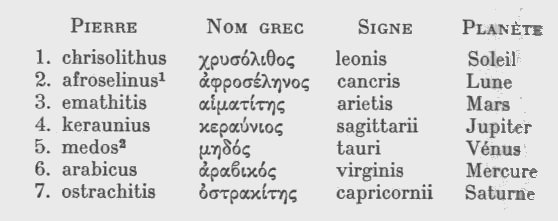
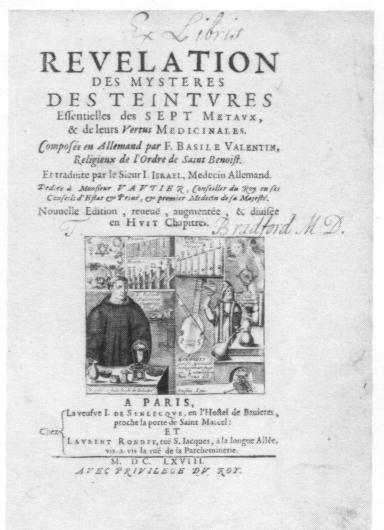

Révélation et Déclaration De F. Basile Valentin Religieux De L'ordre De Saint Benoist,
Concernant Les Plus Curieux Mystères Des TEINTURES Essentielles Des SEPT Métaux, et Les Vertus Médicinales D'icelles. Divisée En SEPT Chapitres (1646).
revu le 18 avril 2004
Introduction : ce traité, à nouveau attribué à Basile Valentin, est congénère de celui professant des Choses Naturelles et Supernaturelles. Nous avons donné le premier, transcrit par Georges Ranque [la Pierre Philosophale, Laffont, 1970]. Il s'agit d'un traité tout à fait spéculatif qui traite de l'Idée alchimique et de la doctrine de l'Art. Sur Basile Valentin, nous avons tout dit dans la présentation du Char Triomphal de l'Antimoine, à laquelle nous renvoyons le lecteur. Ce traité figure dans un manuscrit du Museum d'Histoire Naturelle, sous la côte 2042. De là à ce que Chevreul l'ait possédé et lu, il n'y a qu'un pas à faire...Quoi qu'il en soit, la Révélation est citée par chevreul dans la critique qu'il donne à l'Histoire de la Chimie de F. Hoefer [Hoefer, I]. Il diffère pourtant assez sensiblement du Traité des Choses...en ce qu'il donne de précieux - et originaux - renseignements sur les correspondances entre les métaux et les pierres précieuses ; et partant, entre les pierres précieuses et les signes du zodiaque. Voici les correspondances qui découlent de la leçon de Basile :
métal pierre précieuse signe zodiacal Mercure diamant Gémeaux Mars rubis Bélier Vénus émeraude Taureau Jupiter topaze Sagittaire Saturne grenat Capricorne vif-argent vulgaire cristal de roche ? Lune saphir Cancer
Notez que dans ces correspondances, l'OR est absent, puisqu'assimilé au Soufre, c'est-à-dire à la teinture métallique extraite de chaque minéral. Ce Traité s'offre ainsi à nous comme un lapidaire astrologique, dont le premier exemple peut être trouvé dans le Damigéron-Evax [Lapidaires Grecs, R. Halleux et J. Schamp, Les Belles Lettres, 1985]. Voici quelles étaient les correspondances :

d'après R. Halleux, Lapidaires Grecs, Les Belles Lettres, 1985- La chrisolithe [crusoliqoV] est regardée aujourd'hui comme de l'olivine ou du péridot, quand il est bien transparent. Le mot chrysolithe, toutefois, n'a pas toujours eu le même sens : suivant les auteurs grecs, tels que Orphée, Agatharchade, Strabon, Diodore, la topaze était jaune, couleur d'or, comme la chrysolithe, avec laquelle on a voulu l'identifier ; tandis que d'après les auteurs latins, notament Pline, elle était de couleur verte Selon Diodore et Strabon, la topaze [topazoV] venait d'une île de la mer Rouge nommée Ophiode, c'est-à-dire serpentine. Cette pierre figurait au dernier rang du pectoral que le grand prêtre portait sur la poitrine par dessus l'éphod [avec l'onyx et le béryl]. L'un des poètes de la Pléiade, Remy Belleau a dit encore ceci :
« Le suc verd fait les Emeraudes, le céleste le Saphir, le rouge le Rubis, le violet pourprin l'Améthyste et le Hyacinthe, le doré le Chrysolithe, le suc meslé l'Opalle et l'Agathe : les autres qui ne sont transparentes, mais seulement luisantes par le dessus, sont faites d'vn suc obscur, terreus, espais et non transparent [...] » [Amours et Nouveaux Eschanges des Pierres précieuses, Vertus et Proprietez d'icelles in Oeuvres complètes, par A. Gouverneur, tome III, Paris, 1867]
John Dee cite la chrysolithe dans sa Monade Hiéroglyphique. R. Halleux nous dit [Socrate et Denys, p. 171, op. cit.] que cette pierre pouvait correspondre à la topaze, au cirondon, au chrysobéryl,etc. Nous retiendrons que cette pierre est couleur d'or et que c'est la raison pour laquelle on l'a associée au soleil et au Lion. Elle désigne donc, par cabale, le Soufre rouge des alchimistes.
- l'afroselinus [ajroselinoV] nous intéresse au premier chef parce qu'on y retrouve des traces du Mercure des philosophes. Formé du mot selhnh, le nom de sélénite désigne aujourd'hui diverses variétés de feldspath blanc [Mercure de Nature]. Auparavant, on donnait ce nom au gypse feuilleté [sulfate de chaux, pierre de Jésus, pierre du Levant, cf. réincrudation] parce qu'on croyait y voir l'image de la lune croître et décroître selon ses phases [1, 2, 3, 4, 5, 6, 7, 8,].
- l'emathitis [aimatithV] désigne une variété de pierres dont le point commun est la couleur du sang. La description qui en a été faite par Théophraste [Lap. 37] ne correspond pas à notre hématite [Fe2O3]. Il s'agit - R. Halleux - de jaspe rouge ou de felsite rouge. Chez Philon de Byzance, la pierre qui recouvre les Pyramides serait de l'hématite, mais c'est alors un porphyre rouge, ressemblant au cinabre. Chez Dioscoride, la pierre friable de couleur intense, ressemblant au cinabre, et qui peut être produite par grillage de la magnétite, est notre hématite. En dehors de notre hématite, l'emathitis pourrait désigner des amas de quartz.
- le keraunius [keraunioV] désigne littéralement la pierre de foudre, par quoi l'on comprend son attribution à Jupiter. Chez Pline, ce pourrait être une variété de saphir. Pour le folklore d'Occident - Halleux - il s'agirait de bélemnites ou de haches préhistoriques [1, 2, 3,]. Pour l'hermétiste, la pierre de foudre ne peut être que ce rayon solaire igné que l'Artiste capture, lorsque le Sagittaire décoche sa flèche, après qu'il a capturé dans son filet [au signe des Poissons] les Soufres.
- le medos [mhdoV] est la pierre mède. R. Halleux ne dit exactement à quoi elle se rapporte. Elle est noire et, broyée, laisse paraître une couleur safran. En grec, on trouve, comme autres occurrences : mhdikeion et mhdiou. Selon Pline, la pierre tire son nom de Médée, selon Evax, de la Médie. Selon R. Halleux, la mention du Phase, fleuve de Colchide confirme la première explication. L'intérêt hermétique de cette pierre semble avéré : MhdoV a comme acception fils de Bacchus et mhdoV signifie aussi : pensée, dessein, souci [les alchimistes emploient souvent lors de leurs introductions des phrases où ils expliquent qu'ils sont accablés de souci, etc.].
- l'arabicus [arabikoV] : serait de l'ivoire fossile.
- l'ostracite [ostrakithV] : il s'agirait d'une pierre abrasive. La pierre ostracite a été décrite de façon contradictoire par Dioscoride et par Pline ; il s'agit d'une pierre abrasive décrite dans Damigéron-Evax. Selon ce qu'en dit Anselme Boece de Boot, dans son Parfait joallier ou Histoire des pierreries, p. 504, il s'agirait de la pierre ostracia [Pline, Hist. Nat., Livre 37, cap. 10] : elle est si dure que des fragments servent à tailler d'autres pierres précieuses ; elle est dite ostracite parce qu'elle retire entièrement une écaille d'huître. il y a aussi une espèce d'hématite semblable à l'ostracite. On la trouve en divers lieux de Germanie, en Italie à Arezzo, dans des collines sablonneuses et argileuses. ; au témoignage d'Agricola [De la Nature des Minéraux, cap. 19], les Grecs l'auraient appelé liqosreou pour la distinguer des coquilles de poisons. Nous sommes conduit à penser qu'il ne peut s'agir que de la pierre émeril.Ainsi voyons-nous que certaines concordances peuvent être posées, alors qu'ailleurs, le nom des pierres reste lettre morte [pour Vénus, Saturne et Mercure en particulier]. Dans sa Révélation..., Basile ne révèle certes rien qui ne soit déjà connu. C'est dans la teinture de la Lune qu'il pose les correspondances dont nous avons parlé plus haut et par là, le texte amplifie le Traité des Choses...Dans l'ensemble, le texte est assez abscons et invite à hésiter entre le fait de savoir si Basile parle réellement des teintures métalliques dans leur acception orthodoxe [le Soufre des métaux], ou s'il parle à mots couverts des régimes planétaires du 3ème oeuvre, ou enfin s'il parle des chaux des métaux. Cet extrait du chapitre VI traitant des teintures de la Lune laisse évidemment perplexe. On trouve aussi une allusion très nette aux sels d'étain, à la préparation des dissolutions auriques et peut-être même au pour pre de Cassius, mais là encore de façon très voilée. Le texte se termine par une énigme où il y a beaucoup à dire sur les signes du zodiaque interceptés par Jupiter...
Plan : I : teinture de Mercure - II : teinture de Saturne - III : teinture de Vénus - IV : teinture de Mars - V : teinture du Soleil - VI : teinture de la Lune- VII : teinture de Jupiter - Enigme -

première de couverture du Traité de Basile Valentin
De l'Esprit ou Teinture de Mercure
Plusieurs pourront trouver étrange de ce que je traite et parle des Métaux avec un style particulier, mais je ne le fais pas sans cause, étant fondé sur Méthode ou pratique, de laquelle j'ai sujet de me contenter entièrement. Car elle est cachée dans ma science & appuyée dans la connaissance que j'ai de l'infaillible vérité. Me blâme qui voudra, c'est de quoi je ne me soucie point du tout, on fait toujours plus d'état de ce qu'on voit que de ce qu'on entend dire & on loue plus celui qui a mis un bon fondement que celui qui en a mis un mauvais. [ces paroles semblent anodines. Elles n'en cachent pas moins des mots-clefs tels que : VERITE - FONDEMENT - BLÂMER -. Bien sûr, on pourra nous accuser de toujours voir de la cabale là où il peut ne pas y en avoir. Mais il y a gros à gager que l'introduction de l'Hermès Dévoilé de Cyliani est entièrement faite de cabale, ainsi que nous l'avons fait voir dans St-Grégoire du Vièvre. Nous avons montré, dans le Cosmopolite, ce qui se cachait sous le VERITE. Et c'est d'ailleurs pourquoi les alchimistes disent que la SIMPLICITE est le vrai sceau de la VERITE. ]
C'est pourquoi je dis que toutes choses qui sont visibles et compréhensibles sont faites de l'Esprit du Mercure, lequel Esprit est plus précieux que toutes les choses de la Terre. [Basile dit ostensiblement le faux pour le vrai, car il est clair que ce qui se passe au sein du Mercure en fusion, « fluent », est entièrement caché. Non par l'occulte, mais simplement de manière physique parce que l'on traite ici de la voie sèche, qui se fait au creuset.] Car c'est de lui qu'elles sont faites & qu'elles tirent leur origine ; c'est en lui que le Philosophe trouve tout ce qu'il cherche. Car cet Esprit est l'origine & le commencement des Métaux, étant réduit en un être spirituel, lequel ETRE n'est rien qu'un Air volant de ça & de là sans Ailes [voyez ici l'Air des Sages du Philalèthe : Introïtus, VI.] ; c'est un vent mouvant, lequel, après que Vulcain l'a chassé hors de son domicile, rentre dans son Chaos, puis se mêle et se dilate dans la plus pure partie ou Région de l'Elément de l'AIR d'où il était auparavant sorti, d'autant qu'il aime son semblable, y étant attiré par la force Magnétique des Astres. [le vent diffère selon la période actuelle de l'oeuvre. Au début, nous avons Zéphyre ou Borée, puis amphion et Zethos ; enfin nous avons le vent d'Est, celui qui annonce le printemps hermétique. Maier en parle dans son Atalanta fugiens. Vulcain - Héphaïstos n'est autre que le feu « élémenté », qu'excite le feu élémentaire. Le Chaos est le premier stade de la décomposition des Mixtes. La force magnétique des astres renvoie probablement aux Soufres dissous dans le Mercure. L'AIMANT représente souvent le Mercure, et l'ACIER, le SEL.]Mais si cet ESPRIT DE MERCURE peut être pris et rendu corporel, alors vous avez une EAU claire, pure & transparente, qui est la vraie EAU spirituelle & première RACINE Mercuriale des Minéraux et des Métaux, qui est l'Eau permanente au FEU, entièrement dépouillée de toute aquosité terrestre & phlegmatique : C'est aussi cette EAU céleste, de laquelle tant d'Auteurs ont si amplement écrit. [voila une définition du Mercure qui est fort bien vue. Notez la redondance entre le mot ESPRIT et MERCURE. Car le Mercure est l'Esprit : le moyen capable de joindre les extrémités du vaisseau de nature. Ce vaiseau est triple, comme l'a écrit Nicolas Flamel dans ses Figures Hiéroglyphiques. Le premier vaisseau enveloppe tout, puisqu'il s'agit ni plus ni moins que du fourneau. Ce fourneau doit être capable de résister aux plus hautes températures. On trouve un exemple dans les Mémoires sur la Verrerie de Bosc d'Antic. Voici ce qu'il conseille de réaliser : d'utiliser les scories des fourneaux de forge, qui fournissent le LAITIER. Bosc préconise de construire en pièces de verre un fourneau destiné à fondre et fabriquer le VERRE des alchimistes.]
Par cet ESPRIT DE MERCURE tous les métaux sont résouts en leur première Matière, sans aucune corrosion, comme la glace en l'Eau chaude ; cet ESPRIT rajeunit l'Homme & tous les Animaux, & prolonge la VIE à la vieillesse, consume et détruit toutes choses excrémentaires. Cet ESPRIT est la clé de mes autres clés : C'est pourquoi je crierai : Venez ici vous tous qui êtes bénis de Dieu, & qu'on vous soigne avec cette HUILE DE SANTE, et qu'on embaume vos corps, de peur qu'ils ne se gâtent par corruption et pourriture ; soyez aussi rafraîchis de cette Eau toute céleste, car elle bannit les excessives et peccantes chaleurs : Mais sachez que cet esprit de Mercure contient en soi les trois principes. Il est Mercure, puisque c'est une Eau CÉLESTE qui est le commencement de toutes choses ; il est Soufre, car c'est une HUILE INCOMBUSTIBLE, qui a son origine d'un soufre spirituel, qui est ce moyen unissant de l'ESPRIT & du CORPS, car c'est leur AME ; enfin il est SEL, puisqu'il est un CORPS, quoique spirituel, & ce SEL doit être réuni avec son MERCURE par l'HUILE, comme vous verrez ci-après plus amplement. [on voit rarement les concepts alchimiques exposés de manière aussi exotérique. Il est vrai que le Mercure résoud en EAU les métaux, c'est-à-dire qu'il opère la dissolution des chaux métalliques. Ces chaux ne sont autres que les Soufres rouges, également qualifiés d'huile. Quant aux vertus que Basile attribue au Mercure sur l'homme et les animaux, il est évident qu'il s'agit là soit de chimère soit de propos à entendre par cabale. L'EAU CELESTE est bien sûr notre rosée de mai. Curieusement, Basile prend à contre-pied la tradition puisque c'est à l'Âme qu'il attribue le pouvoir de liaison entre l'Esprit et le Corps. On a vu que Lambsprinck écrivait la même chose dans son De Lapide Philosophicum. Enfin, nous sommes d'accord avec le raccourci entre le SEL incombustible et le CORPS de la pierre. Quant à dire que le SEL doit être réuni au MERCURE par l'HUILE, c'est énoncer la réincrudation de l'Âme, c'est-à-dire l'incarnation de l'ESPRIT dans le CORPS par le moyen de l'ÂME, entendue ici comme huile.]
Et pour mieux faire entendre de quel être, matière et forme est cet ESPRIT DE MERCURE, je dis que sa substance est animée, sa matière spirituelle & sa forme terrestre [par animation du Mercure, on entend la transformation du Mercure commun - Mercure des Philosophes - en Mercure philosophique. Le Mercure des philosophes est présent en substance dans un corps terrestre qui est à la fois pierre et non pierre, comme disent les Adeptes, c'est-à-dire qu'il s'agit d'efflorescences salines. Les alchimistes ont voilé le nom vulgaire de ce sel en le citant parmi bien d'autres. Par exemple, Grosparmy, alchimiste normand dont Fulcanelli et Chevreul ont beaucoup parlé, écrit dans le Trésor des Trésors :
« Aucuns ouvrent de Vitriols, Alums, Attramens, Sels et de toutes manières de drogueries, comme sont Antimoine, Tutie, Magnésie, Calamine, Marcassites, et toutes manières de borax. Les autres prennent les quatre Esprits savoir l'Orpiment, Sel armoniac, Souffre et Vif argent »
Cette tirade est d'autant plus diaboliquz que toutes les substances citées par Grosparmy ont leur utilité dans l'oeuvre, prise à différentes périodes. Le vitriol sert à la préparation du Mercure, de même que l'alun. L'atrament est du sulfate de fer mais désigne aussi du sulfate de cuivre ou vitriol bleu. L'atrament est donc un autre terme pour désigner le vitriol mais il est connu aussi comme un liquide noir, sans doute à cause du fer qu'il contient. Par ailleurs, la partie métallique du vitriol est utilisée dans la préparation des Soufres. Les Quatre ESPRITS de Grosparmy ne sont autre que les quatre matières à utiliser dans l'oeuvre. L'orpiment désigne l'ARSENIC, que Geber désigne comme le CORPS de la Pierre. C'est l'équivalent du principe SEL de Paracelse. Le Sel ARMONIAC est le lien du Mercure, le loup que tous ont confondu avec l'antimoine, réputé être le loup des métaux. Même Isaac Newton s'est laissé abuser par cet antimoine, à cause du signe du Bélier dans lequel la tradition astrologique voit l'exaltation du SOLEIL. Nous passons sur le SOUFRE et le VIF ARGENT, auxquels des sections sont consacrées.] ; Ce qu'on doit entendre comme chose incompréhensible, ces paroles seront indubitablement rudes et étranges à plusieurs parce qu'elles font naître des pensées extraordinaires. Il est bien vrai que ces paroles sont extraordinaires, c'est pourquoi elles requièrent aussi des hommes d'extraordinaire Esprit pour les entendre. A la vérité, elles ne sont pas si aisées à comprendre que l'est au paysan la méthode de bien conduire la charrue, et ceux qui ne sont pas versés en cette science ne la comprendront pas, quoique, inconsidérément, ils s'imaginent le contraire. J'estime celui-là instruit en la vraie SCIENCE, qui, après la parole de DIEU & les Mystères du salut de son AME, a appris à bien connaître par de bons principes et fondements bien raisonnés, la NATURE des choses sublunaires, qui renferment les Minéraux, Végétaux & Animaux : afin que la lumière d'une vraie et solide connaissance dissipe et fasse évanouir l'obscurité de l'ignorance & que nous puissions distinguer le bon d'avec le mauvais, ou le bien d'avec le mal.
Il n'est pas nécessaire de savoir la première origine ou source de cet ESPRIT DE MERCURE ; sachez toutefois en passant qu'elle est surnaturelle, sortant des Astres célestes & des Eléments de la première Création. Mais il suffit de considérer cet Esprit en qualité de Terrestre. C'est pourquoi laissez les Astres & leurs influences, en les concevant seulement par la foi ou l'imagination, parce que leurs vertus & impressions sont invisibles & incompréhensibles ; ne vous arrêtez non plus à la spéculation des Eléments : Car ils ont déjà par leur concours engendré cet Esprit : Et il n'est pas au pouvoir de l'homme de rien faire d'iceux, vu que cela appartient seulement au souverain Créateur de l'Univers. [voila de la bonne cabale : l'ESPRIT de MERCURE, on l'a di plus haut, est un pléonasme en première approximation. En effet, si l'on étudie l'ART de la VERRERIE, on se rend compte que le verre en fusion est parfois affecté de défauts comme des NUAGES, qui traduisent la présence d'un SOUFRE grossier. Employer l'expression d'ESPRIT de MERCURE veut donc réellement signifier que le Mercure a été animé. C'est cette animation, d'ailleurs, qui fait l'objet de l'allégorie de la planche qui sert de frontispice au Mutus Liber, où l'on voit un dormeur sur le point d'être éveillé par deux anges sonnant de la trompette - ou du buccin. Cette animation requiert le concours des astres et a été allégorisée par la fable de la rosée de mai. C'est évidemment une image bien poétique qui ne pouvait qu'enflammer l'Esprit survolté des apprentis alchimistes. S'ils n'ont point - à notre connaissance - réussi à soutirer le sel qu'il nous faut de cette rosée, ils nous ont par contre laissé des livres et des images, tel Armand Barbault dans son Or du Millième Matin (J'ai Lu, 1969), si rempli de poésie. Barbault a laissé aussi des commentaires fort intéressants du Mutus Liber. Pour l'influence des astres sur le petit monde des alchimistes, voyez l'humide radical métallique. D'ailleurs, Basile nous prévient charitablement qu'il parle au figuré en parlant de l'influence des planètes. E. Canseliet en fait autant dans son dernier livre, l'Alchimie Expliquée sur ses Textes classiques (Pauvert, 1988). Et c'est là encore qu'il faut suivre Basile quand il nous assure que cet ESPRIT doit être vu en sa qualité de TERRE. C'est faire bien voir que le SOUFRE dissous dans le Mercure est destiné à assurer la réincrudation ou recorporification des chaux dissoutes. Pour la spéculation des éléments, voyez l'ATLAS des Connaissances humaines de Chevreul ou la Cristallogénie du R.P. Ortolan.]
Qu'il vous suffise donc de connaître ce seul Esprit de Mercure, déjà fait et engendré, qui a forme, & s'il n'en a point, savoir qui soit parfaite, il est compréhensible & toutefois incompréhensible en divers égards, quoique néanmoins visiblement apparent à nos yeux. De sorte que, quand vous l'aurez, vous pouvez vous assurer que vous possédez la première MATIERE dont sont faits tous les Minéraux & Métaux [de tous temps, les hommes ont voulu avoir cette matière première. Au XVIIIe siècle encore, Geoffroy croyait tenir le Soufre des métaux - Fulcanelli en parle dans sa trilogie. Bosc d'Antic crut, quant à lui, avoir préparer une TERRE PRIMORDIALE en mixant les quatre TERRES et les sept METAUX pour en faire du VERRE. Il a ainsi fait des compositions de la terre du genre caillou, la terre calcaire, la terre gypseuse et la terre argileuse, avec toutes les chaux métalliques. Ce mélange a produit à un feu violent, longtemps poursuivi, un verre ordinairement noir vu en masse, jaune vu en éclats très minces. Il a ensuite mêlé du suin - fiel de verre ou sel de verre - à ce verre en fusion. Rappelons que le suin est un mélange de sel admirable de Glauber, d'Arcanum duplicatum et de sel marin en proportions variables. Le suin enlevait alors le principe colorant surabondant et amenait le verre à la couleur vert d'eau. Bosc d'Antic supputait que la couleur noire produite au début n'était que la résultante des trois couleurs primitives. Ce verre était ensuite cémenté avec la chaux pendant longtemps, à un feu ordinaire de calcination ; il perdait alors sa transparence, sa fusibilité et se changeait en un corps très réfractaire, inattaquable par les acides, en une porcelaine blanche ou, si l'on ajoutait du précipité de Cassius, en porcelaine d'une couleur pourpre pâle. Bosc notait alors plusieurs points :1)- les quatre espèces de terre et les chaux métalliques, excepté la chaux d'or, perdaient par la vitrification leurs propriétés caractéristiques ; 2)- toutes les chaux métalliques, y compris la chaux d'or, y devenaient complètement irréductibles ; 3)- toutes ces terres minérales et métalliques paraissaient réduites à UNE SEULE ET MÊME TERRE, inattaquable par tous les acides et la plus infusible que l'on connaisse. Bosc se posait alors la question de savoir s'il n'avait pas devant les yeux la VRAIE TERRE PRIMITIVE, la TERRE ELEMENTAIRE. Il ajoutait que cette terre semblait avoir quelque rapport avec celle du genre caillou mais qu'elle en différait par son caractère infusible. Enfin, Bosc d'Antic se demandait si les vases murrins, si estimés des Anciens, et dont nous avons eu plusieurs fois l'occasion de parler, notamment dans la réincrudation, n'étaient pas une porcelaine de verre colorée en pourpre - nous savons à présent que la murrhe est de la fluorine - fluorite ou spath fluor. Bosc tirait argument du fait que d'après les decriptions obscures que nous en avons, ces vases étaient de couleur rouge, n'avaient pas la transparence du verre, ni sa fragilité, et soutenaient bien mieux les alternances de températures. Pour les minéraux, Bosc soutenait que les terres alkalines perdaient la propriété qu'elles avaient de se surcharger du principe colorant par la raison qu'elles étaient sans doute réduites à leur SIMPLICITE PRIMITIVE. Evidemment, ce sont là des spéculations de l'époque qui précède immédiatement celle de Lavoisier, et intermédiaire entre Stahl et Becher. Voyez aussi la section Matière.]; cette MATIERE qui se joint avec le SOUFRE, qui est décrit au chapitre de VENUS, et avec le SEL, dont fait mention le chapitre de MARS, lequel SEL les réduit à une coagulation parfaite, & en un corps qui est une souveraine & très-puissante Médecine, non seulement pour guérir la lèpre des Métaux imparfaits ; mais aussi pour chasser toutes les maladies du corps de l'Homme & l'entretenir en parfaite Santé. [là encore, les termes de Soufre et de Sel ne semblent pas correspondre aux bonnes planètes. Mais il est vrai qu'on peut retirer le SOUFRE aussi bien du vitriol vert que du vitriol bleu, et même du vitriol blanc, qu'il ne faut pas coonfondre avec le vert calciné en blancheur. Pour les correspondances par rapport aux pierres, voyez Soufre. Quant au SEL, en principe il se retire de la LUNAIRE. Le SEL dont parle Basile correspond donc à l'EAU SECHE qui ne mouille point les mains. On le voit, ce SEL est tout de vertu CELESTE, ainsi que le profesait l'Adepte inconnu qui pratiqua une transmutation devant Van Helmont. D'aucuns disent que cet Adepte était Philalèthe...] Et vous ne devez pas vous étonner des grandes vertus de cet Esprit parce que DIEU l'a ainsi ordonné & que la NATURE les effectue sous le bon plaisir de sa divine Providence. Plusieurs les croiront impossibles & mépriseront ces grands Mystères, parce qu'ils ne les entendent pas, & ils demeureront dans leurs persuasions erronées, jusqu'à ce qu'ils soient illuminés par la volonté de DIEU, ce qui n'arrive que bien rarement. [Maier, dans son Atalanta fugiens écrit :
« L’artiste doit veiller à éviter une telle erreur et à choisir avant toutes choses le véritable enfant royal, bien qu’il ne resplendisse pas d’ornements d’or et qu’il ait un vêtement méprisé et vil, un teint livide et mélancolique ; il ne faut pas pour ces raisons le rejeter ou prendre un autre à sa place »
Pour dire que des termes parfaitements anodins, comme le mépris, l'embarras, l'ennui, le blâme, etc. cachent de traits de cabale. L'expérience enseigne seule ceux qu'il faut essayer de débusquer. Ici, par exemple, Maier veut nous dire qu'il faut employer un sulfate qui soit des parties de Saturne. bien sûr, les apprentis en tiendront pour la stibine. Pourtant qu'ils méditent la parole de Fulcanelli qui assurait que la stibine était l'albâtre des Sages. Qu'ils consultent notre prima materia où nous traitons ce point de science.] Mais tous ceux qui sont savants par le travail de leurs études ou expériences, confirmeront que tout ce que j'ai écrit en ce Traité est aussi véritable que le CIEL est ordonné pour la récompense des bons & l'ENFER pour la punition des méchants.
Je n'écris pas maintenant tout ceci autant avec la Main qu'avec le Coeur, & une grande affection qui me porte a décrire la Nature des corps Métalliques, selon leur intérieur & leur extérieur, & même selon les principes qui sont enfermés dans leur centre, quoique il y ait plusieurs hommes qui, poussés d'un esprit mondain ou fantasque haïssent et blâment la recherche des secrets admirables de la Nature : Cela n'empêchera pas pourtant, j'en suis assuré, que le temps viendra, lorsque la moëlle de mes os sera desséchée, que plusieurs auront un très grand désir que je fusse encore en VIE pour les instruire de vive voix & si Dieu le permettait, ils me tireraient très volontiers hors du tombeau & des cachots de la Mort, ce que, sachant qu'ils ne pourront pas faire, je leur ai laissé des écrits, afin que soit confirmée par eux la croyance qu'ils doivent avoir de la vérité de ces hauts mystères et miracles de la Nature, & que cet écrit public confirme ma dernière volonté, qui a été de favoriser les pauvres & les Amateurs de cette secrète science. [l'auteur a évidemment lu le Livre Secret d'Artephius. Les pauvres sont aussi souvent évoqués dans les textes, peut-être parce que, plus que les riches mais sans le savoir, ils possèdent dans leur chaumière la matière première. Basile lui-même n'a-t-il pas dit qu'il faudrait même aller la chercher dans le fumier ?] Et quoique je n'aie du tant écrire, j'ai toutefois voulu, autant que je l'ai pu sans porter offense ou préjudice au salut de mon AME, vous envoyer une lumière, comme au travers d'une petite Nuée, afin que l'obscurité de la Nuit étant chassée, la nouvelle clarté d'un jour serein vous éclaire & illumine.
Sachez donc à cette heure comment l'Archée opère en Terre par l'esprit de Mercure [sur tout ce qui concerne les Archées, voyez Chevreul.]; aussitôt que cette semence spirituelle est imprégnée par l'impression des Astres & nourrie par les Eléments, elle se convertit en EAU-DE-VIE Mercuriale [cf. Mercure de Nature]. Et qu'au commencement, quand le Macrocosme fut fait de rien & que l'Esprit de DIEU donna la VIE à cette créature terrestre, la Vertu divine opérait par les influences & opérations des luminaires célestes ; comme pareillement dans le Microcosme était la Vertu de DIEU, mais c'était par la Toute-puissante opération de son saint & sacré Souffle.
Ensuite, le Tout-puissant donna un moyen par lequel sa volonté puisse être accomplie par la Nature de chaque chose, afin que l'une fût capable d'agir en l'autre & de s'entraider : Et ainsi fut donnée à la Terre l'influence des lumières ou des Astres célestes pour engendrer, ainsi qu'une chaleur interne pour décuire & échauffer ce qui serait trop froid dans ses entrailles, à cause de son aquosité, chaque chose produisant par ce moyen selon son genre & son espèce : De même, le Ciel rempli d'ETOILES excite une qualité chaude & une vapeur sulphureuse, subtile, apure & clarifiée, qui se joint & s'unit avec la substance Mercuriale de la terre, qualité par laquelle l'humide est petit à petit desséché ; et si, en même temps, l'AME, qui est le baume de la nourriture, se joint au CORPS, en opérant par l'influence céleste, alors s'engendrent les Métaux parfaits ou imparfaits, [Contrairement à ce que nous disons plus haut, Basile est ici d'accord avec les autres Philosophes. L'opération de l'influence céleste s'exerce selon la nature de la chaux métallique. cf. humide radical métallique] selon que les trois principes ont plus ou moins travaillé : Mais si cet esprit Mercurial venant d'en haut est spécifié sur l'Animal, il se fait ANIMAL, ou s'il est spécifié sur le Minéral, il se fait Minéral, toutefois avec distinction & selon qu'il a opéré. Car, quant aux Animaux, il opère par soi; au regard des végétaux, d'une autre façon par soi, comme aussi aux Métaux & Minéraux, chacun s'en nourrissant suivant son instinct particulier, dont j'aurais lieu, si je voulais, de composer de très amples discours. [pour les métaux, voir la Génération des Métaux ; le cas des minéraux est bien sûr celui qui nous occupe au premier chef. Grosparmy, d'ailleurs, ne cite dans son Trésor des Trésors que des minéraux, au début de son traité.]
On aurait sujet de me demander, avec raison, comment on pourrait avoir ou faire cet Esprit Mercurial ? De quelle façon il le faut préparer, en sorte qu'il puisse guérir les maladies & transmuer les Métaux imparfaits par leur propre semence ? Je m'assure qu'il y en a plusieurs qui attendent la Réponse avec un grand désir : C'est pourquoi Je ne cacherai rien, & dirai tout ce que la divine Providence me permettra de déclarer.
Prenez donc, au nom de Dieu, d'une Mine d'Argent vif rouge, & semblable au Cinabre, & de la meilleure Mine d'OR que vous pourrez trouver. Etant purifiées, broyez-les ensemble en poids égal, avant que de les exposer au Feu, & versez dessus de l'Huile Mercuriale, faite de l'Argent vif sublimé et purifié sans addition. [c'est ici que commencent les affaires sérieuses. Basile nous parlera-t-il de la voie humide ou de la voie sèche ? Cette mine d'Argent vif rouge s'apparente au minium : nouss avons que ce terme vaut pour l'arsenic et aussi pour le plomb. A défaut de plomb ou de mercure, seule la potasse rouge peut être compatible avec ce que décrit Basile. Mais imaginons un instant que Basile veuille réellement nous parler de minium et d'or pulvérisés. Que peut-on en faire ? Dans son Art de la Verrerie, Loysel a examiné de nombreuses compositions où figure du minium - plomb - et de l'or, à partir d'une de ses dissolutions. Le minium mis au feu va de toute façon se transformer en litharge. Et l'or ne peut intervenir dans la préparation que s'il a auparavant été mis dans une de ses dissolutions par un sel d'étain...On voit qu'on aboutit à une impasse. Est-ce donc bien de l'or vulgaire dont parle Basile ? Voyez notre voie humide. Pour tout ce qui concerne les dérivés mercuriques vulgaires, voyez Huginus à Barma.]
Mettez le tout à digérer au feu pendant un mois & aurez un extrait qui sera plus spirituel que corporel ; faites-le distiller tout doucement au Bain Marie, vous verrez sortir le phlegme ; l'huile demeurera au fond, bien pesante, qui tire à soi en un moment tous les Métaux. Versez sur cette huile trois fois autant d'esprit de VIN, faites circuler le tout dans un pélican jusqu'à ce que l'esprit de VIN devienne en couleur de SANG & d'une grande douceur. Otez par inclinaison cet esprit de VIN coloré & en versez d'autre sur cette matière, le faisant circuler comme vous avez déjà fait : ce que recommencerez autant de fois que votre esprit de VIN ne puisse plus tirer de rougeur, ni de douceur. Après, prenez tout l'esprit de VIN qui sera coloré comme un rubis, versez-le sur du TARTRE blanc bien calciné, & distillez le tout à feu de cendres assez fort : l'esprit de VIN demeurera avec le TARTRE, mais l'Esprit de MERCURE passera. [cf. voie humide sur les dissolutions auriques où nous passons en revue les principaux procédés pour la préparation de l'or potable. L'introduction du sel de tartre donne la clef de la substance qui tombe au fond de la cornue : il s'agit d'hepar sulfuris. Cette substance, chargée d'or, a été préparée par Sthal dont nous donnons ci-dessous la recette :
Sur trois parties de sel de tartre très pur, vous mettrez deux parts de soufre jaune, que vous ferez fondre en un creuset, et pendant la fusion vous y jeterez une partie d'or, qui s'y fondra et dissoudra facilement. Après la fusion, retirez la matière du feu, et vous trouverez un hepar sulphuris qui se pulvérisera. Mettez cet hepar pulvérisé dans de l'eau chaude et il s'y fondra. Filtrez cette eau, elle est rouge et chargée d'or, c'est un or potable, d'un goût peu agréable, et approchant de celui du magistère de soufre. M. Sthall donne à cette dissolution toutes les qualités que l'on accorde à l'or potable. Il faut avouer cependant qu'en évaporant à feu très doux toute la liqueur, il reste une chaux rouge qui se joint aisément au mercure : ainsi l'or n'y est pas dissous radicalement.Cette préparation a un intérêt remarquable dans l'histoire des sels d'or. Ce qu'a obtenu Stahl [Sthall] n'est autre que du sesquisulfure d'or par voie directe. Pour cela, il fait digérer de l'or en poudre dans du polysulfure de potassium [hepar sulphuris]. Le soufre qui se trouve en excès dans cette dernière substance se combine avec l'or ; le sulfure qui en résulte se combine à son tour avec le sulfure de potassium pour former un sulfosel, dont il est l'élément électro-négatif. A noter qu'en lieu et place du polysulfure de potassium, on peut utiliser du soufre et du carbonate de potasse [lui-même pouvant être préparé de différentes façons : à partir du salpêtre, c'est l'alkali fixe - à partir du tartre, c'est l'huile de tartre par défaillance, sorte de carbonate hydraté très concentré]Si vous mettez cet Esprit de MERCURE avec l'esprit sulphureux du SOLEIL & avec son SEL, et si vous les pouvez conjoindre ensemble par la distillation convenable, afin qu'ils ne se séparent jamais l'un de l'autre, vous aurez alors une Médecine singulièrement excellente : Mais si vous fermentez cette Médecine avec le corps du SOLEIL, selon le poids requis, & que vous conduisiez à perfection par décoction parfaite durant un certain temps, alors vous aurez un OR plus que parfait, qui sera une souveraine Médecine, tant pour les maladies que pour la pauvreté, & en aurez un grand contentement de Corps & de Biens.
Voilà la méthode pour avoir cet esprit de MERCURE, laquelle j'ai révélée, selon que j'en ai pu obtenir licence du Souverain Commandeur : Quant à mes opérations & Tours-de-Main, vous les considérerez & en userez sagement, afin que vous évitiez les peines d'Enfer, étant fidèlement admonestés par mes avertissements.
Au reste, la porte de ce Palais Royal ne peut être vraiment & philosophiquement ouverte que par une seule Clef, qui guérit toutes maladies, quelles qu'elles puissent être, comme hydropisie, paralysie, apoplexie, vertiges, goutte, pierre, épilepsie, lèpre ; bref toutes en général. Ce MÉDIUM guérit aussi les maladies vénériennes et vieilles plaies, comme cancers, loups, fistules et toutes autres, ainsi que je vous ai déjà dit. Prenez bien garde à ceci et le retenez bien, savoir que toute science a son commencement de cet Esprit Mercurial, lequel est revivifié par le Soufre spirituel : De façon qu'il s'en fasse une essence toute Céleste, & si elle est jointe au Sel, il s'en fait un Corps doué de vertus innombrables. Mais le commencement de l'Esprit de l'Ame et du Corps demeure l'Aimant, comme il l'est aussi, & ne peut être connu pour autre. [sur l'Aimant, voir Matière.]
Enfin tenez pour vérité que, sans cet Esprit de MERCURE, l'OR ne saurait être rendu potable, ni la Pierre des Philosophes accomplie : Contentez-vous de ceci & gardez le silence : Car, moi même, je me tairai, puisque le juge suprême veut que vous & moi nous nous taisions, & mettez vous-mêmes en pratique cette science, sans vous en attendre à un autre, de qui l'ignorance vous serait dommageable.
De l'Esprit ou Teinture de Saturne
SATURNE dans la partie supérieure du CIEL est par-dessus & le plus haut de toutes les autres planètes ; mais dans la partie inférieure du Monde, à savoir dans la Terre, il est le plus bas, le moins estimé & le plus vil de tous les autres Métaux : Et tout ainsi que le CIEL a permis que cette lumière supérieure de SATURNE se soit élevée au plus haut des autres, au contraire, la Nature a voulu que Saturne fût par Vulcain rendu le moins parfait de tous ses Compagnons : Car la lumière supérieure a causé & engendré Saturne de corps non fixe, ouvert de beaucoup de pores, afin que l'Air puisse pénétrer son Corps & le soulever: mais d'autant que ce Métal n'est pas fixe, ni très compact, le FEU peut facilement agir sur lui pour le fondre, ce que doit bien observer celui qui recherche les mystères de Nature en lui : car il y a grande différence entre corps fixes & non fixes, & entre les causes d'où proviennent leur permanence & leur volatilité. Et quoique les sens reconnaissent le Saturne pour plus pesant que quelques autres Métaux, notez pourtant que quand on le fond avec d'autres, nonobstant l'union que leur donne la fonte, les autres Métaux vont en bas, comme on voit dans l'ANTIMOINE quand il est fondu avec d'autres Métaux ; d'où on apprend que tous les autres sont de consistance plus compacte & resserrée que le BON SATURNE : Car il faut qu'il cède et donne place aux autres, & ne saurait gagner aucune victoire sur eux, étant consumé avec les volatils à cause que ses trois principes sont chargés d'impureté & parce que son SEL est plus fusible qu'aucun SEL des autres, son Corps aussi est plus fusible et moins fixe. [Saturne, c'est d'abord le premier régime de la tradition alchimique - certains disent que la Grande coction débute par le régime de Mercure. Mais il y a au fond, peu de distance entre les deux. Saturne, c'est aussi le Mercurius senex de Jung, c'est-à-dire le Mercure primordial ou premier Mercure. C'est lui qui forme le vase de nature où il faut plonger les corps du SOLEIL et de la LUNE, c'est-à-dire nos deux CHAUX METALLIQUES. C'est encore Saturne qui dévore sa progéniture, sauf Zeus, parce que sa mère a donné, sans qu'il s'en aperçoive, une pierre à la place de Zeus. Voici, enfin, ce que nous dit Pernety sur Saturne :
Saturne. Un des grands Dieux des Egyptiens, était fils du Ciel et de la Terre; selon quelques-uns, du Ciel et de Vesta ; et suivant Platon, en son Timée, Saturne était fils de l'Océan et de Thétis. Il épousa Ops ou Rhéa sa sœur, et s'empara du Royaume de son père, après l'avoir mutilé. Titan, frère de Saturne, à qui, comme aîné, appartenait le Royaume, fit la guerre à celui-ci pour s'en emparer. Il le céda cependant à Saturne, à condition qu'il ne conserverait aucun des enfants mâles qui lui naîtraient, afin que la couronne retombât dans sa famille. Saturne consentit avec plaisir à cette condition, parce qu'il avait appris qu'un de ses fils le détrônerait. Saturne pour tenir sa parole, dévorait lui-même tous les enfants mâles qui lui naissaient. Ops qui en était très mortifiée, usa d'un stratagème pour les conserver. Se sentant enceinte et prête d'accoucher, elle se munit d'un caillou, et après avoir mis Jupiter au monde, elle le donna à nourrir aux Corybantes, et lui substitua son caillou, qu'elle enveloppa de langes, et le présenta à Saturne, qui le dévora, sans y faire attention. Métis fit prendre dans la suite à Saturne un breuvage qui lui fit rendre le caillou et les enfants qu'il avait engloutis. Titan s'étant aperçu de la supercherie de Rhéa, fit la guerre à son frère, s'empara de Saturne et de son épouse, et les mit en prison, où ils restèrent jusqu'à ce que Jupiter, devenu grand, les en délivra. Saturne craignit alors pour lui les effets de la prédiction qu'on lui avait faite, et tendit des embûches à Jupiter. Celui-ci les ayant découvertes, fit la guerre à son père, le détrôna et le mutila. Saturne se retira en Italie dans le pays Latium, où régnait Janus, qui le reçut très humainement. Ils régnèrent conjointement, et procurèrent à leurs Sujets toutes sortes de biens. Voyez l'explication chymique de cette fable, dans le liv. 3, chap. 3 des Fables Egypt. et Grecq. dévoilées.Il est conforme à la cabale que Saturne soit fils du CIEL et de la TERRE. En effet, le nitre prend naissance dans l'atmosphère et la terre fournit le plus souvent l'acide vitriolique, raison pour laquelle Basile nous dit, dans le premier chapitre sur Mercure, que MARS et VENUS président à la destinée de MERCURE. Voyez ce que nous disons de Vesta dans l'humide radical métalique. Le combat de Titan contre Saturne son frère, peut être considéré comme l'allégorie de la rencontre d'une base alkaline et d'un acide. Dans la fable des titans, nés des dents du dragon vaincu par Cadmos, on voit que ceux-ci naissent de la TERRE et se combattent mutuellement, dans une scène qui s'apparente à un bouillonnement. L'enfant mâle dont la naissance est interdite peut être représenté par le SOUFRE rouge ou principe tingeant de la pierre. La suite de l'histoire de Saturne se confond avec les régimes planétaires. Au régime de Saturne succède celui de Jupiter, qui selon Pernety, serait de couleur grise, avant celui de la Lune dominé par le blanc. Quant à Ops,fille du Ciel et de Vesta, sœur et femme de Saturne, elle fut adorée sous le nom de Cybele, et était regardée comme la Déesse des richesses; parce qu'étant la terre philosophique, elle est en effet la base de l'œuvre hermétique, source des richesses comme de la santé. En qualité de femme, on la prend pour l'argent-vif.Nous avons vu dans les Principes que Ops - Cybèle - n'est autre que l'athanor lui-même, flanquée de ses deux Lions (Atalante et Hypoménès). Qu'elle soit soeur et femme de Saturne en même temps n'est donc point étonnant.]
Mais afin que vous appreniez la Génération de SATURNE, sachez que comme l'EAU commune devient Glace par la coagulation que lui cause la froideur naturelle provenant de l'altération du Ciel supérieur, de même on peut dire que SATURNE est coagulé & fait corporel par la grande froideur qui se trouve dans son SEL ; &, comme la Glace se résout par la chaleur, ainsi SATURNE étant de même coagulé et fait Métal est rendu fusible par un feu pareil à celui du Mont Æthna ; il se trouve en lui grande quantité de Mercure, mais non permanent, volatil, & une fort petite quantité de SOUFRE, qui est la cause qu'il n'a pu être assez échauffé. [ces réflexions se trouvent aussi dans le Traité des Choses Naturelles et Supernaturelles, traité apocryphe bien entendu.] Le SEL de même se trouve en petite quantité, mais pourtant fusible, quoique la subtilité du SATURNE ne provienne pas du SEL : car si le SEL donnait la fusibilité & malléabilité, il s'ensuivrait que le MARS serait plus fusible & malléable que le Saturne : mais d'autant qu'il y a des distinctions & différences ès Métaux, vous devez bien prendre garde comment il les faut distinguer & entendre. [on s'abuserait à vouloir faire correspondre le plomb à Saturne et le fer à Mars. Saturne désigne le Plomb des Sages et Mars, leur vitriol. ]Tous les Philosophes ont écrit avec moi que le SEL donne la Coagulation, & corporifie chaque Métal, & il est en vérité ainsi : mais je prouverai bien par un exemple comment on le doit entendre. [il est tout à fait exact que le SEL correspond au CORPS de la pierre. Mais ce n'est pas exactement le métal qui se trouve ainsi réincrudé au terme de son calvaire. Ainsi que l'a justement dit Fulcanelli, la chimie ne diffère pas de l'alchimie, jusqu'à ce que l'on réalise l'animation du Mercure. A partir de là, c'est plus un processus physique, mettant en jeu presque au sens littéral du terme les Eléments de Platon, qu'un processus chimique qui va s'enchaîner.] On tient l'Alun de plume pour un SEL, comme il l'est véritablement & peut être comparé au SEL de Mars ; lequel SEL alumineux est d'une nature non fusible, ainsi que celui de Mars. Le Vitriol, au contraire, bien qu'il ait un SEL en soi en petite quantité, est toutefois fusible & ouvert, c'est pourquoi son SEL ne peut pas donner une si grande coagulation au Métal, auquel il symbolise, que les autres SELS ; & nonobstant que tous les SELS des Métaux proviennent d'une même racine et semence, toutefois il faut observer une différence de leurs trois premiers principes, tout ainsi qu'une herbe diffère de l'autre & un animal d'un autre animal, dont les qualités et propriétés ont beaucoup de dissemblance. [L'alun est le vitriol romain dont nous parle Tripied dans son Vitriol et Fulcanelli dans le Mystère des Cathédrales.]
L'AME OU TEINTURE de SATURNE est d'une qualité plus douceâtre que celle de Jupiter & on ne trouve quasi rien de si doux, si on fait la séparation des parties pures d'avec les impures, afin qu'on en fasse des opérations bien plus parfaites. De plus, cet Esprit ou Teinture, appelée communément SEL de SATURNE, est de nature fort froide & sèche : c'est pourquoi je conseille aux personnes mariées de ne s'en pas beaucoup servir, car il refroidit trop la Nature humaine & empêche que leur semence ne puisse faire les opérations ordinaires : il n'est pas aussi utile pour la RATE & pour la Vessie, car il cause de soi beaucoup de phlegmes, ce qui engendre une grande mélancolie aux hommes : Car le SATURNE est un Gouverneur extrêmement mélancolique, vu qu'il augmente grandement l'humeur atrabilaire en l'homme. Mais quand on se sert de son Esprit, alors un esprit mélancolique attire l'autre, & l'homme est guéri de l'influence de sa mélancolie. Le SEL ou AME de SATURNE guérit extérieurement toutes plaies, qu'elles soient vieilles ou nouvelles & arrivées par coupures, blessures ou autres accidents naturels, ce qu'aucun autre Métal ne saurait quasi faire. Il est aussi un grand réfrigératif pour les tumeurs chaudes des membres, & a cette propriété de manger la chair corrompue et pourrie : il sert d'un bon fondement pour guérir tous accidents et maladies intérieures, principalement d'origine chaude ou inflammatoire. Comme, au contraire, la noble VÉNUS fait des merveilles dans les autres maladies, parce qu'elle est de qualité chaude, au lieu que SATURNE se trouve froid : il y a aussi de différentes qualités entre le Soleil & la Lune, parce que la Lune est plus petite que le Soleil, & elle ne comprend dans la mesure de son Cercle que la huitième partie seulement de la grandeur du Soleil : Si la Lune avec sa qualité froide excédait en grandeur le Soleil comme celui-ci l'excède, alors tous les fruits de la Terre se gâteraient, car il serait toujours un temps d'hiver & ne se trouverait aucun temps d'Eté. [ce passage se trouve le même que celui du Traité des Choses Naturelles et Surnaturelles.] Mais Dieu, le Créateur, a mis de certaines bornes et limites à ses créatures, en sorte que le Soleil puisse luire & échauffer de jour, & la Lune éclairer et rafraîchir de nuit, & rendre service de cette façon aux Créatures de la Terre.
Ceux qui sont nés sous l'influence de SATURNE sont d'ordinaire Mélancoliques, & si la raison ou l'instruction qu'on leur doit donner ne les modérait, ils seraient portés d'inclination à être rigoureux & toujours en inquiétude, &, croissant en âge, ils deviendraient avaricieux : ils s'adonnent ordinairement à des entreprises hautes & difficiles, sont fort laborieux et grandement pensifs, se réjouissent rarement en compagnie, & ne portent pas grand amour à la beauté naturelle du sexe féminin, mais aiment l'agréable divertissement de la MUSIQUE.
Enfin je vous dis que SATURNE a pris naissance de peu de SOUFRE, de peu de SEL, & de beaucoup de MERCURE grossier et peu mûr, lequel peut être comparé à l'écume surnageant sur l'Eau, en regard du Mercure de l'OR qui est d'un degré très chaud : Le MERCURE de SATURNE n'a pas une Vie aussi vigoureuse que celui de l'Or, parce qu'il se trouve une plus grande chaleur en celui-ci, qui est cause de cette vigueur, laquelle a été grandement augmentée par l'Archée dans ce monde inférieur & Soleil terrestre, de la Vie & esprit vif duquel se fait la transmutation & amélioration des Métaux. [ A propos de l'écume qui surnage dans l'eau, on ne peut pas manquer de faire le rapprochement avec la préparation du verre. En effet, dans le verre en fusion, il vient un moment où l'on voit apparaître à la surface du composé une matière qui se nomme le fiel de verre. Ce fiel est encore appelé sel de verre ou suin. Il est constitué essentiellement de sel admirable de Glauber, d'Arcanum duplicatum et de sel marin. Bosc d'Antic en a parlé de façon très positive dans ses Mémoires. De là à penser que le Saturne dont nous parle Basile serait formé de ces substances ou que, du moins, c'est là qu'il faudrait en chercher la matière, il n'y a qu'un pas.]
Maintenant, voilà la description véritable des trois principes de SATURNE, au regard de leur Origine, qualité & complexion. Ainsi je vous donne avis qu'aucune transmutation de Métal ne se peut faire par le Saturne, à cause de sa grande froideur, excepté qu'il peut coaguler le Mercure vulgaire, d'autant que le Soufre froid de Saturne peut dominer sur l'esprit chaud du vif argent vulgaire, si on y procède bien : C'est pourquoi on doit observer une telle méthode, que la Théorie réponde à la Pratique.
Vous ne devez mépriser le SATURNE, parce que sa vertu & propriété est inconnue de beaucoup de monde : Car la Pierre des sages Philosophes tire le premier commencement & origine de sa Couleur Céleste & resplendissante procédante seulement de ce Métal, & moyennant l'influence des Planètes la Clé de fixité & permanence est donnée à Saturne par la putréfaction, parce que du Jaune ne peut venir aucun Rouge, s'il n'a été du Noir premièrement fait blanc. [Admirable pirouette de cabale. Les couleurs cardinales de l'oeuvre sont nommées en une phrase bientournée et l'on chercherait assez longtemps semblable passage, certes lapidaire mais combien révélateur, sur les régimes. C'est, encore une fois, sur le travail du verre que l'apprenti alchimiste doit d'abord se baser avant d'entreprendre les grands travaux du magistère. Certes, il pourra s'ennuyer ainsi à préparer du verre blanc, du verre coloré, du verre vert - verd - mais enfin, au bout du compte, il aura sans doute acquis quelque teinture de science. Et surtout, il aura appris à éliminer le soufre grossier grâce au fiel de verre ou grâce au bâton de pélerin. Qu'il sache donc qu'au début, les TERRES et les ASTRES ERRANTS forment une substance NOIRE en masse, mais qui apparaît JAUNE VERT éclatée. Et que le BLANC n'apparaît qu'autant qu'un principe salin émané de VENUS y a été introduit. Ce principe salin peut d'ailleurs être prescrit avec des auxiliaires comme l'ORPIMENT ou l'ANTIMOINE, parce qu'ils aident à l'élimination du soufre grossier qui empeste le verre. Ces auxiliaires aident le fiel de verre à se faire un chemin vers le CIEL.]
Je pourrais encore décrire beaucoup de choses naturelles & surnaturelles, & raconter leurs vertus admirables, outre ce que j'ai dit auparavant et prétends dire en la suite des Chapitres du reste des sept métaux ; mais à cause qu'un autre travail m'en empêche, je conclurai le plus brièvement qu'il me sera possible ce Chapitre, me réservant de déclarer le reste de la secrète science des Métaux et Minéraux au Livre que je mettrai bientôt au jour, contenant un traité de l'ANTIMOINE, Vitriol, Soufre & Aimant des Philosophes, [il doit s'agir du Char Triomphal de l'Antimoine...] & des autres matières, qui, par préférence, tiennent enfermées dans leur intérieur la vraie Matière & substance de laquelle l'OR & l'ARGENT ont leur Commencement, milieu & Fin, avec leurs vraies transmutations particulières, quoique cette vertu en sa perfection soit dans une seule & unique Matière, dans laquelle la semence de tous les Métaux & Minéraux est invisiblement cachée, & cette Matière est visible aux yeux de tout le monde, mais parce que l'opération de sa vertu est profondément cachée & enfermée, & qu'elle est inconnue de plusieurs, c'est pourquoi cette digne Matière est estimée inutile & de nulle valeur & demeurera ainsi, si ce n'est qu'à l'exemple des disciples de notre Seigneur, qui allèrent en Emmaüs & reconnurent le Sauveur par la fraction du pain, les yeux soient quelque jour ouverts aux enfants de la Science, afin qu'ils voient la merveille de toutes les merveilles que le puissant Créateur de toutes choses a mis et enfermé dans une chétive Créature ou matière, dont le nom est Hermès, qui a dans ses Armes un Serpent volant & dont la femme est appelée Hermaphrodite, laquelle connaît tous les Coeurs des humains, & est pourtant une seule Matière, un seul Etre commun partout & connu de tous, & qu'un chacun manie ; duquel même plusieurs se servent pour des choses basses & de peu d'importance. On fait grand cas d'une chose haute & élevée, & on néglige une chose basse, quoi qu'elle tienne enclose une autre chose de très haute considération, & qui n'est autre chose qu'une EAU & FEU desquels la Terre par le moyen de l'AIR est engendrée, conservée & parfaite. [EAU et FEU, c'est nommer les deux principes élémentaires du MERCURE, eau ignée ou feu aqueux comme on voudra. A force de scruter les textes, on les perçoit comme une sorte de « musique ». On sait ce qu'ils signifient mais on est impuissant à les traduire en paroles, si ce n'est en actes...Le début de la tirade de Basile sur le serpent volant est du même tonneau que les descriptions si nombreuses de l'une des matières premières du Mercure, qui a damné plus d'un alchimiste, alors qu'il l'avait sous les yeux, si ce n'est même, sous la main. Mais il est vrai qu'elle n'apparaît que comme un résidu méprisable.]
Grâce soit à l'Eternel pour ses dons, & que ceci suffise pour la déclaration que je me suis proposé de manifester en ce Chapitre.
De l'Esprit ou Teinture de Vénus
La planète de VENUS ne peut être calculée que très difficilement, comme me l'avoueront les Mathématiciens & Astronomes : Car son Cours se fait autrement que celui des six autres Planètes, c'est pourquoi sa naissance est aussi d'une autre sorte. [en fait, il s'agit des mouvements combinés de Vénus et de la Terre qui constituent la principale difficulté. Là encore, le texte est très proche des Choses, etc.] Je dirai donc que la Naissance de VENUS possède le premier rang après Mercure, mais quoique Mercure ait cette propriété de pénétrer & de faire agir, il ne saurait rien faire néanmoins, si Venus ne l'incite & pousse en ses opérations particulières auxquelles elle participe avec plaisir & beauté tout ensemble. [il y a là un trait de cabale qui peut jeter un jour nouveau sur une parole du Philalèthe :
«...si Saturne a vu sa beauté dans le miroir de Mars ».
Or, de quoi peut-il être question ici, si ce n'est de VENUS ?] Je ne me vante point ici d'être Astronome, ni de pouvoir calculer le Cours des Astres, parce que je dois passer mon temps en prières dans la Maison de Dieu: mais afin qu'après mes dévotions je ne perde point inutilement le temps que j'ai de reste, je m'adonne a la connaissance des choses Naturelles, en la recherche desquelles j'ai connu qu'il est assez facile de savoir d'où Vénus a pris son Origine & sa naissance ainsi que son accroissement : comme aussi ce qui peut être produit par sa grande & copieuse abondance, car elle est plus vêtue qu'elle n'en a besoin, & il lui manque seulement la fixité. [ce passage n'est qu'une paraphrase du Traité des Choses, etc.]
Sachez donc que Vénus est vêtue d'un soufre Céleste qui est plus abondant en elle qu'au Soleil, duquel on en tire beaucoup moins que d'elle : mais afin que vous appreniez quelle est la Matière de ce soufre, qui domine abondamment en cette Venus & dont je fais si grand cas, sachez que c'est aussi un esprit chaud & volatil qui peut pénétrer et décuire, ce que l'ignorant ne croit pas, & s'il demande comment l'esprit de Vénus peut perfectionner les Métaux imparfaits, vu qu'il est lui-même imparfait & non fixe, je lui réponds, comme j'ai déjà dit, qu'encore que cet Esprit ne possède pas dans le Vénus un domicile fixe, et qu'aussitôt que ce domicile est brûlé par le Feu, celui qui y loge soit contraint de quitter avec regret l'Hôtellerie où il logeait comme passant : néanmoins, si ce même Esprit de Vénus étant extrait est joint au Corps fixe du Soleil, il est protégé, & personne ne peut le chasser de là, si ce n'est qu'un certain Juge donne son consentement pour cet effet : car il est mis dans ce fort domicile comme dans sa Terre naturelle, où il est obstinément enraciné par ce Corps parfait & fixe.Cet Esprit ou Teinture de Venus se trouve aussi dans le MARS & y est encore plus parfaite : Car Mars est le Mâle & Venus la femelle, dont j'ai fait mention en un autre lieu : Cette Teinture se trouve aussi dans la couperose & dans le Vitriol qui est un Minéral duquel je pourrais écrire un Livre entier ; & en ces choses se trouve un soufre qui brûle & un autre qui ne brûle point, ce qui est une chose merveilleuse ; l'un est blanc en son extraction, & l'autre est rouge, celui qui ne brûle point est le vrai & légitime soufre, & en lui est enfermé un pur Esprit, dont se fait une huile permanente au Feu, & c'est de ce même esprit qu'a été fait le soufre du Soleil, étant d'une même racine. [il est clair que depuis le début de ce chapitre, Basile n'a en vue que cette teinture qui se trouve soit dans Mars, soit dans Vénus. On sait de quoi il s'agit quand il cite la couperose et le vitriol. Deux substances peuvent être compatibles avec ce que nous dit Basile : l'acide vitriolique ou le Soufre du vitriol.]
Je manifeste ici plusieurs secrets que je ne devrais pas déclarer : mais que ferai-je ? il n'est pas expédient de tout cacher ; car la médiocrité est bonne en toutes choses, comme vous verrez dans ma protestation.
Ce soufre de VENUS peut bien être appelé & nommé le Soufre des Sages, car toute sagesse et bonheur se trouvent en lui, si une fois il est conjoint par une union spirituelle avec le Sel de Mars & l'esprit de Mercure, afin que de ces trois se fasse un par une même Opération. Et ce soufre spirituel vient d'en haut, ainsi que l'Esprit de Mercure: mais avec différence, car les Astres produisent diversement les choses fixes & non fixes, les colorées & non colorées. [selon notre hypothèse, Vénus livre un sel contenant du potassium et Mars, un sel contenant de l'acide vitriolique. Notez que tous les vitriols peuvent prétendre donner ce composé. Le vitriol vert, le bleu, le blanc et le vitriol romain. Cela peut expliquer que les Adeptes ne citent pas, dans leurs textes, le même vitriol à chaque fois.]
La Teinture consiste en la vertu de l'Esprit de Venus, & principalement dans celui de Mars son mâle, & cet Esprit est une fumée puante & malodorante au commencement, laquelle doit être résoute en manière de liqueur; afin que l'huile puante & incombustible en puisse être faite, qui tire son origine de MARS ; cette huile s'unit facilement avec l'Esprit de Mercure & attire à soi tous les Corps des Métaux, quand ils sont auparavant bien préparés, selon la méthode de mes Clefs. [Il s'agit des Douze Clefs de Philosophie.]
Je n'observe pas ici l'ordre des Planètes pour cause ; car je décris seulement le rang de leur naissance : Vénus donc ayant beaucoup de soufre a été plutôt décuite avec Mars que les autres Métaux. Mais Mercure les a fort aidés ; il n'a pu toutefois améliorer leurs Corps imparfaits, ni les fixer, faute d'un lieu propre, apte et convenable pour opérer en eux à cette fin.
Je vous révélerai ici ce secret, qui est que le Soleil, Vénus & Mars ont une même Teinture de semblable substance & couleur [n'oubliez pas ici que MARS et VENUS participent du MERCURE et que le soleil, sauf erreur, participe du SOUFRE. Mais le soleil, c'est aussi, outre le symbole de l'Or alchimique, celui du principe FIXE, autrement dit, du sel fixe. Dès lors, ne vous étonnez pas de trouver ensemble, mêlés, le Soleil, Mars et Vénus. Les alchimistes attribuent d'ailleurs plusieurs dénominations pour un nom...Ils n'ont pas rendu la tâche facile aux impétrants...], & la substance de cette Teinture est un Esprit & une fumée, comme j'ai déjà dit, qui pénètre tous Corps Métalliques : Si le pouvez rendre plus aigu par l'Esprit du SEL de Mars & le conjoindre avec l'Esprit de Mercure, selon le poids nécessaire, les purifiant de toutes impuretés afin qu'il s'en fasse un corps doux sans corrosion, vous aurez une Médecine, laquelle ne peut être comparée à aucune du monde : Mais si vous la fermentez avec le SOLEIL resplendissant, vous posséderez tout-à-fait le secret pour transmuer les Métaux.
Ô Sapience éternelle ! Comment vous rendra-t-on assez de grâces pour un secret que le monde ne considère point & que la plupart néglige de connaître ? Il est caché dans la Nature, tout le monde le voit devant ses yeux & ne le connaît point ; chacun l'a dans ses mains & ne le comprend pas ; on le manie souvent sans y prendre garde & sans savoir ce que l'on touche ; cet aveuglement ne tient qu'à ce que son intérieur leur est caché. [Basile tente ici de faire passer un message. Parle-t-il du MERCURE, ou du moins de l'un des éélments essentiels du Mercure ? Tout porte à le croire. Quoi qu'il en soit, il n'y a pas plusieurs solutions au problème que pose Basile. La substance dont il parle est soi-disant commune. Et accessible à tous, c'est-à-dire d'abord aux pauvres. Comme au riches, et peut-être daavntage aux pauvres qu'aux riches. Cela dit, et compte tenu que les Adeptes sont d'accord pour déclarer que cette matière première, l'apprenti ira la chercher dans les étables, voire dans les lattrines, on ne sera donc pas surpris d'y voir le sel NITRE. Certes, le nitre est un fondant bien connu. Pour autant, il ne serait d'aucune utilité dans l'oeuvre, utilisé per se. C'est de sa combinaison avec un autre corps que naît le Mercure, agent de liaison tout autant que de croissance. Voyez notre tartre vitriolé.]
En vérité, je vous révélerai encore pour l'Amour de Dieu un grand Mystère, savoir que la Racine du souphre des Philosophes, qui est un Esprit Céleste, comme aussi la Racine ou Origine de cet Esprit spirituel & surnaturel de Mercure, &, même le commencement ou source du Sel spirituel, est en une seule chose, & se trouve en une seule & même Matière de laquelle se fait la Pierre des Philosophes & non en plusieurs choses, quoique les Philosophes allèguent le MERCURE par soi, le SOUFRE par soi, & le SEL par soi : mais je dis que par cela ils entendent les impuretés qui se trouvent en chacun d'eux. On peut toutefois faire par plusieurs voies une Médecine particulière pour une transmutation médiocre & limitée des Métaux. [effectivement, l'une des matières premières contient le SEL et une partie du MERCURE. Voyez Fontenay.]
Mais cette Médecine ou Transmutation Universelle, qui est le grand Trésor de la Sapience terrestre, faite des trois Principes, se trouve & se tire seulement d'une seule & unique Matière, qui réduit tous les Métaux à un Principe & première Matière, & est le vrai esprit de Mercure, l'Ame du Soufre, & le Corps spirituel du Sel, [ainsi que vu supra, on voit que Basile - c'est-à-dire l'Anonyme qui a rédigé ces lignes - est en contradiction avec lui-même, puisque au début, il prend l'Esprit pour le Corps, et que, chemin faisant, il se rétablit dans la doctrine orthodoxe en réduisantles Principes dans leur vraie définition : l'ESPRIT pour MERCURE ; l'ÂME pour le SOUFRE ; le CORPS pour le SEL. On voit ainsi combien les alchimistes abusent de leurs pauvres lecteurs...Et combien ils déendent l'Entrée au Palais du Roi, en la verrouillant par des Clefs à eux seuls connues.] unis & enfermés corporellement & spirituellement ensemble dans une Matrice Céleste & de même nature qu'eux [c'est-à-dire que cette matrice est FLUENTE. De toute façon, obstacle supplémentaire à sa compréhension, elle est DOUBLE. En ce sens qu'il faut savoir faire la différence entre le MERCURE COMMUN où les SOUFRES n'ont pas encore été infusés et le MERCURE PHILOSOPHIQUE, résultat de l'animation de sa première forme.], & est le Dragon & l'Aigle [c'est-à-dire le FEU aérien] ; le Roi & le Lion [le Lion rouge] ; l'Esprit & le Corps [le Mercure et le Soufre blanc. Mais ici, il doit s'agir du Rebis ou homme double igné de Basile] ; laquelle Médecine teint le Corps du Soleil d'une Teinture si exubérante & d'une puissance si abondante, qu'il a une vertu présente : celle de teindre & fixer ses compagnons parfaitement.
Ô Benoîte Médecine donnée de Dieu le Créateur ! Ô Aimant Céleste, dont la force a des attraits de douceur & d'Amour ! Ô substance dorée des Métaux ! Combien grande est ta force ? Combien est incompréhensible ta vertu ? & combien courageuse est ta constance ? Bienheureux est celui sur terre qui connaît ta lumière par vérité : car il ne sentira aucune pauvreté ni maladie & aucun mal ne l'incommodera jusqu'à sa MORT, déterminée par l'arrêt de son Roi céleste [passage tout de cabale : la mort représente la sublimation de la chaux de l'une des natures métalliques. Quant au Roi céleste, il s'agit de la planète dont dépend le métal, c'est-à-dire sa nature ; ]. Il est impossible que toutes les langues des hommes puissent déclarer la Sagesse qui est cachée dans ce trésor, & tous les éloquents seront contraints de se taire & s'étonner & admirer avec un grand ravissement d'esprit lorsqu'ils verront cette gloire surnaturelle. Mais j'appréhende d'en avoir trop déclaré ; J'espère toutefois prier Dieu, afin qu'il ne m'impute pas cela à péché puisque j'ai commencé cette oeuvre en sa crainte & l'ai révélée pour sa gloire. Ô sainte & éternelle Trinité ! Je te loue & honore de coeur & de bouche, de ce que tu m'as révélé la grande sagesse de ce monde terrestre, comme aussi ta divine Parole, dont je connais la toute puissante vertu & les merveilles surnaturelles qu'elle a produites, lesquelles l'homme ne veut pas reconnaître. Je te supplie d'affection, donne-moi dorénavant raison & sagesse, afin que je puisse jouir de ce TRESOR de merveilles avec action de grâces pour l'utilité de mon prochain & pour le salut spirituel de mon AME & la santé de mon Corps [ce thème de l'Âme a été exploité jusqu'à plus soif par tous les alchimistes, à partir du Moyen Âge] ; & que ton nom en soit glorifié & honoré par toutes créatures au Ciel & en la Terre, & que mes ennemis puissent connaître que tu es un Seigneur plein d'infinies merveilles, & qu'à la fin ils viennent à repentance de leurs crimes & se convertissent à toi pour éviter la punition qui est préparée aux méchants dans les ténèbres inférieures : C'est pourquoi aide-nous par ta divine grâce, O Père, Fils & Saint-Esprit, Mon Dieu qui es élevé sur toutes choses dans ton Trône de gloire & de puissance, duquel la sagesse n'a point de commencement ni de fin ; devant qui il faut que toutes les créatures célestes, terrestres & infernales TREMBLENT AVEC RESPECT, & que tu sois loué des siècles des siècles, ainsi soit-il.
Ô Chérubin ! Ô Séraphin ! Ô Combien sont grandes les merveilles de mon Seigneur & Dieu ! Priez-le qu'il lui plaise me regarder comme étant chétive créature & serviteur très abject, & d'apaiser son courroux envers moi de ce que je donne & publie cette présente Révélation des mystères les plus cachés de la Nature.
Après, il faut que le lecteur sache & observe la naissance de Vénus, à savoir que Vénus est engendrée de beaucoup de Soufre, que son Mercure & Soufre sont en même poids, parce qu'on n'y trouve pas plus de l'un que de l'autre : mais d'autant que le Soufre surpasse en abondance de Teinture le Mercure & le Sel, il en sort une grande Rougeur teingente, laquelle a pris possession de ce Métal & a empêché le Mercure d'achever la fixité [de quoi Basile parle-t-il ici ? Est-ce de la planète Vénus, est-ce de Vénus-Aphrodite, d'Hesperus, de Vesper, de Lucifer ? de l'enfant de Saturne ? Où n'est-ce pas plutôt du régime de Vénus ? Nous serions tenté de pencher vers cette dernière hypothèse, d'autant que la « grande rougeur teingeante » apparaît réellement à l'occasion de ce régime qui suit celui de Mars.].
Sachez donc que le Corps de Vénus est justement comme un arbre qui a beaucoup de résine ainsi qu'est le sapin ou autre semblable, laquelle Résine est le Soufre de l'arbre résineux qui jette par son côté la Résine en abondance. Un tel Arbre ainsi abondant en Teinture & soufre de Nature, & décuit par les Eléments, brûle facilement & n'est pas aussi durable ni pesant que le Chêne & autres semblables, qui sont denses & compacts, n'ayant pas leurs pores aussi ouverts que les Bois légers es quels [dans lequels] le soufre domine abondamment. C'est pourquoi les autres ont plus de Mercure & de bien meilleur SEL que le Sapin & ils ne surnagent pas aussi sur l'Eau aussi aisément que lui, car leurs pores sont si étroitement resserres que l'Air ne pouvant pas y entrer pour les supporter, ils demeurent ainsi pesants. C'est ici la vraie pensée de ce qu'il faut croire des Métaux & principalement de l'OR, qui a acquis un Corps invincible, fort fixe, & resserré par l'abondance de son Mercure fixe & bien cuit, auquel ne peuvent nuire aucunement le feu, ni l'eau, ni la terre, ni l'air, ni aucune putréfaction, parce que ses pores sont étroitement clos & serrés, afin que la nuisance & destructive puissance des Eléments ne lui puisse faire aucun tort, laquelle compacité & fixité donnent un témoignage assuré de la pesanteur que l'OR doit à bon droit avoir plus que les autres Métaux; ce qui se vérifie facilement dans des balances & aussi par le moyen du vif-argent, sur cent livres duquel, si vous mettez un scrupule d'OR, il ira incontinent au fond par sa pesanteur, comme aussi les autres Métaux étant plus légers surnagent au-dessus, parce que leurs pores sont plus ouverts, & l'Air & le vent les pénètrent davantage.
Vous devez encore observer que l'Esprit de Venus fait de grands effets en la Médecine : car on sait par expérience que sa vertu est très utile, non seulement celle qui vient de cet Esprit, tiré de son premier être ou origine ; mais aussi la vertu qui se trouve en ce même Esprit, tiré & extrait de sa dernière matière.
Enfin cet Esprit de Venus est un Médicament & remède fort louable, car il guérit la suffocation de matrice, l'épilepsie, l'hydropisie, le noli me tangere, les vieilles plaies, les apostêmes, tant internes qu'externes ; il préserve le sang de putréfaction, excite la digestion, rompt la pierre, de quelque façon qu'elle soit & fait de merveilleux effets, tant au-dedans qu'au-dehors du Corps humain. Vous devez encore observer ceci de l'Esprit de Venus, que c'est un Esprit chaud, & pénétrant, cherchant & consumant toute la mauvaise humidité & phlegme superflu, tant es hommes qu'aux Métaux, qui peut avec raison être mis au rang des plus excellents remèdes. Il est igné & aigu, & toutefois incombustible, spirituel & sans forme: c'est pourquoi il peut aussi comme un Esprit sans forme donner ignéité, cuire & mûrir, [ce passage tendrait à nous faire penser que tout ce traité sur les planètes n'ait peut-être qu'une vaste allégorie sur les régimes de Philalèthe et de Cyliani] & si vous êtes un vrai naturaliste, ayez-le en recommandation, car il ne vous délaissera point sans la santé, ni sans les richesses, moyennant que vous le connaissiez & sachiez bien vous en servir.
J'espère que mes écrits, joints à ma bonne volonté, auront quelque crédit envers ceux qui sont observateurs de la Nature, & qui sondent & pratiquent ses secrets. C'est pourquoi ils aiguiseront leurs sens & ouvriront leurs yeux & leurs oreilles, afin qu'ils puissent apprendre de moi ce qu'on n'a jamais observé ni appris : à savoir ce qui se trouve dans cet Esprit sulphureux de VENUS, mais celui qui n'observe & n'entend mes écrits ne fera ici aucun profit. Personne donc ne saura user utilement de cet esprit s'il ne fouille & cherche dans le Venus par son exacte Anatomie, les secrètes & intérieures vertus qui sont en lui, ainsi que j'ai fait : Si quelqu'un peut m'en apprendre quelque chose que je ne sache pas encore, je le prie avec affection de ne m'en être pas ingrat ; il en sera récompensé par mille remerciements avec usure, & ainsi je vous recommande au très-haut Créateur.
De l'Esprit ou Teinture de Mars
MARS & VENUS ont une Teinture toute de même comme l'OR & comme aussi tous les Métaux, en quelque petite quantité qu'elle puisse se trouver en eux.
Il est véritable & connu d'un chacun qu'il y a des hommes différents en leur humeur, & dont les opinions sont fort diverses ; lesquels néanmoins prennent leur origine & sont engendrés d'une même semence & matière. Cette diversité qui est en eux provient principalement de l'influence que les Astres impriment, tant en leurs Corps qu'en leurs Esprits & en tous leurs sens ; & comme ces Influences Célestes sont variables & changeantes, selon leurs différents aspects : ainsi les inclinations des hommes, prenant & empruntant leur force ou leur faiblesse de ces influences, sont, par conséquent, grandement différentes entre elles. Par exemple, un homme est enclin aux études des Mathématiques ; un autre affectionné à la Théologie ; un autre à la Jurisprudence ; un autre à la Médecine ; un autre à la Philosophie. Il y a plusieurs Esprits affectionnés aux Arts & métiers : Car l'un devient Peintre, l'autre Imprimeur ; celui-ci un Cordonnier, celui-là un Tailleur, & ainsi des autres. Tout ceci vient des Influences des Astres ; ensemble aussi de l'imagination particulière d'un chacun, confirmée surnaturellement par les vertus Célestes. Ainsi il se voit que tout ce que l'homme s'est une fois fortement proposé & imprimé dans son esprit, y demeure attaché de telle sorte qu'il est presque impossible de lui ôter hors de la fantaisie, si ce n'est par de fortes raisons & grande longueur de temps, ou par une puissante résolution de faire le contraire ; ou si ce n'est qu'en un instant la Mort survienne, qui met fin à toutes choses.Ainsi en est-il des hommes qui s'adonnent sérieusement à la Noble & légitime curiosité de la vraie CHIMIE & à la recherche des plus profonds secrets de la Nature, lesquels pour l'ordinaire n'abandonnent point cet excellent exercice qu'ils ne l'aient pratiqué & fondé par toutes les voies qu'ils ont jugé raisonnables en leur esprit, quoi que cela ne se fasse pas trop aisément.
La même chose peut se dire des Métaux : Car selon que les Influences & imaginations des Astres influent sur les Minéraux & Métaux, leur différence se fait, & comme tous les hommes sont tous hommes, mais différents comme j'ai déjà dit, ainsi tous les Métaux sont appelés Métaux, comme aussi le sont-ils. Toutefois, quoiqu'ils soient tous engendrés d'une même semence & matière, ils ne laissent toutefois d'être divers en leur nature particulière : car l'un est chaud & sec, l'autre froid & humide; d'aucuns sont d'une complexion simple, les autres d'une qui est composée.
Mais pour revenir à parler particulièrement du MARS, vous saurez qu'il a en sa composition & degré un SEL plus grossier que les autres Métaux; d'où vient par conséquent que son Corps est plus dur grossier & solide, & moins malléable que tous ses compagnons - ce, par l'ordre de la Nature. En lui se trouve peu de Mercure, plus de soufre & beaucoup de SEL [Basile semble parler ici des vitriols qui, de toute évidence, sont riches en sels vitrioliques. Mais il ne s'agit pas du SEL des philosophes]; de cette mixtion & addition des Eléments, est procréé son Etre naturel : il contient en soi un Esprit qui, en ses opérations & vertus est tout semblable aux autres : Mais si vous connaissez le véritable Esprit de Mars, je vous dis ingénument qu'un grain de cet Esprit ou QUINT-ESSENCE prise avec de l'Esprit de VIN fortifie le coeur de l'homme, de telle sorte qu'il n'a aucune peur de ses ennemis, excitant en lui un coeur magnanime de Lion, & même l'échauffant pour le rendre capable d'emporter une Victoire contre Venus. Ainsi, quand la conjonction de Mars & Venus se rencontre dans les constellations, alors ils ont fortune & victoire dans leur bon & malheur, & demeurent unanimement ensemble, même ayant pour ennemis tout le monde [la conjonction de Mars et de Vénus est l'opération qui a été voilée par Philalèthe quand il dit dans l'Introïtus :
« Laisse la coquille et prends le noyau, purge-le à trois reprises par le feu et le sel, ce qui se fera aisément si Saturne a regardé sa propre beauté dans le Miroir de Mars » [Introïtus, VII]
Saturne est ici le dissolvant des Sages dont la bonne disposition dépend de la rencontre de Mars et de Vénus - beauté -.]. Mais à cause que je suis Religieux dans un Monastère occupé au service de Dieu, je suivrai ses saints commandements, qui me prépareront le chemin dans le Ciel ; tâchant par une foi vivifiante & par une fervente invocation de son aide de me tenir ferme en la grâce de notre Médiateur & patron Jésus-Christ, & j'abandonnerai les affections déréglées & désirs impertinents de la chair & du monde dressant mes intentions purement a la gloire de mon Dieu & au soulagement de mon prochain, en faveur duquel je laisse au monde ces miens écrits en considération de la charité que je lui porte.
Donc, par cet Esprit de MARS sont admirablement bien guéries toutes maladies Martiales, comme la Dyssenterie, les maladies des femmes appelées Menstruës, tous flux de ventre & plaies ouvertes internes & externes de tout le corps, causées par le Mars sanguinaire, qu'il serait trop long de citer par leurs noms, lesquelles sont connues des Médecins savants. Si l'Esprit de MARS est bien connu, on trouvera qu'il a une secrète affinité avec l'Esprit de VENUS & que ces deux Esprits étant convenablement réunis & faits une Matière d'une même substance, forme, essence & vertus, ils peuvent guérir les susdites maladies & transmuer les Métaux avec profit. [voyez le laboratoire, 2 où nous donnons un schéma explicatif des possibiités offertes par la réunion de Mars et de Vénus]
Mais on doit remarquer la propriété & vertu que MARS possède en sa forme corporelle & Corps terrestre utile a plusieurs choses : car il arrête le sang des plaies extérieures & ôte intérieurement les obstructions du Corps; il gradue & augmente la TEINTURE à la LUNE, & fait plusieurs autres beaux effets, quoique cela n'arrive pas toujours heureusement pour le Corps de l'homme, ni des Métaux, parce que par lui seul, selon son Corps grossier, on ne peut faire grand profit, si ce n'est qu'on sache les secrètes vertus que la Nature a mis en lui. Il faut que je dise encore ceci, que la Pierre d'Aimant & le vrai MARS [allusion au Soufre rouge, ou du moins d'un Soufre rouge possible, que l'on extrait du vitriol romain ; Maier a dit qu'on pouvait aussi le trouver si l'on sait où sont les ossements d'Oreste : 1, 2, 3, 4,] ont de mêmes vertus dans les maladies du Corps humain & sont tous deux d'une même Nature. Mais en ce qui concerne l'intelligence céleste spirituelle & Elémentale entre le Corps son Ame & son Chaos dont l'Ame & l'Esprit sont sortis, je dis que le Corps s'est trouvé le dernier dans cette composition.
Mais que fera-t-on si les grossiers ne comprennent pas ceci, & si ceux à demi sages n'y prennent pas garde, ou si ceux qui sont extraordinairement sages examinent trop ce que j'ai ici écrit ? Je voudrais que ces derniers fussent portés d'affection envers mes écrits, & qu'ils les expliquassent simplement & sagement, car ils portent avec soi leur Sentence & conclusion si clairement que les intelligents ne manqueront jamais à les entendre d'eux-mêmes, & d'en tirer la résolution de ce qu'ils auront à pratiquer. Pour conclusion de ce chapitre, sachez que les gens mariés ne peuvent pas longtemps vivre d'accord en leur ménage si l'un tourne le chariot d'icelui vers l'Orient, & l'autre vers l'Occident, [Basile dit dans sa VIe Clef que deux vents doivent souffler, l’un le vent d’orient, qu’il appelle Vulturnus [Triomphe Hermétique de Limojon de St Didier], et l’autre le vent du midi, ou Notus [Ripley, Douze Portes]. Après que ces deux vents auront cessé, les Harpies seront mises en fuite, c’est-à-dire, les parties volatiles deviendront fixes] parce qu'ils sont différents en intentions & actions, ce qui cause entre eux de grands désordres : Mais s'ils veulent vivre paisiblement & longuement en amitié, il faut qu'ils soient d'un même Esprit, pensée, opinion & vertu pour accomplir ce que leur coeur désire, & ainsi l'Amour & la fidélité régneront parmi eux; aussi je dis que, si les trois Principes ne sont par une due proportion & purification philosophique, joints & unis ensemblement, ils ne produiront pas l'effet de la fin désirée, à cause du discord & de la disconvenance qui seraient parmi eux : Car le MERCURE est de soi trop craintif & manque de constance & fixité [le Mercure est le milieu ou moyen servant de liaison aux deux extrémités du vaisseau de nature]; le SOUFRE ne peut pas échauffer le Corps avec amour à cause de sa petite quantité de chaleur [le Soufre est la teinture de la Pierre. Il s'agit là du Soufre rouge de Fulcanelli] ; le SEL n'a pas aussi une qualité propre & naturelle à cause de sa grande abondance, faisant une coagulation trop forte & trop dure [le Sel est l'Arsenic de Geber ; c'est le Soufre blanc de Fulcanelli. Il s'agit du squelette de la Pierre, fait d'une terre adamique à laquelle est lié un peu de sel harmoniac]. Mais après qu'ils seront bien préparés & purifiés, ils donneront par leur triple union & digestion parfaite, une chose en UN, qui cause tant de merveilles.
Je crois que vous prendrez en bonne part cet exemple, puisque Syrach loue la fidélité & la malice d'une femme, mais en diverses façons, & ainsi je prends congé de MARS, ajoutant ceci : que personne ne peut juger la différence d'une ou plusieurs choses, s'il ne les a considérées auparavant, & appris, connu & bien fondé leur nature & leurs propriétés.
De l'Esprit ou Teinture du Soleil
La lumière que j'ai reçue du Ciel m'oblige de révéler par écrit une chose qui est le vrai symbole du Courage & de la constance, parce que le SOLEIL est un FEU ardent & consumant, Chaud & sec, qui contient la plus grande force & vertu des choses naturelles : la vertu, dis-je, de ce SOLEIL cause les TROIS CHOSES plus considérables parmi les hommes : savoir, le bon entendement, la SANTE & les richesses. Je n'ai pas peu de peine en moi-même, & mon Esprit n'est qu'en crainte d'entreprendre le dessin de révéler des choses qui ont toujours été tenues dans le secret ; mais quand je rentre en moi-même & que je rappelle les pensées & motifs qui m'incitent à continuer ce dessein, il n'est pas en mon pouvoir de m'en distraire, & je trouve qu'il ne me reste qu'à user de discrétion & de quelques précautions dans ma façon d'écrire, afin que je ne sois cause d'aucun mal; mais plutôt qu'on aie sujet de me remercier de l'utilité qui en pourrait provenir, en quoi suivant l'occurrence, je me servirai de la même méthode que les autres Philosophes qui m'ont précédé. Observez donc en premier lieu qu'il faut bannir toutes choses étranges & qui ne sont utiles à la spéculation Philosophique, mais qui peuvent plutôt être cause que vous perdiez l'occasion de jouir de ce qu'il vous faut chercher ; or sachez que si vous êtes épris d'affection à posséder cet Aimant doré, [pour l'Aimant et l'Acier, voyez Matière] vous devez premièrement adresser vos voeux & prières à DIEU avec zèle, contrition & humilité, afin que puissiez parvenir à la connaissance scientifique des TROIS divers MONDES qui sont à la raison humaine les curieux objets d'admiration.
Le premier est le MONDE céleste ou ARCHETYPIQUE, dans lequel l'AME immortelle doit avoir sa résidence, duquel vient son premier ETRE qui fut après la Création divine de l'Univers [c'est une idéalisation de la quinte-essence, c'est-à-dire de la chaux métallique sublimée. L'Âme immortelle correspondant à l'humide radical de chaque métal. Voyez humide radical métallique]. Ce monde sur-céleste est, après DIEU, la première imperceptibilité mouvante ou la première AME mouvante imperceptible, par laquelle la VIE naturelle opère sur-naturellement, & cette AME ou Esprit est la première Racine & source de VIE de toutes les créatures, & ce que l'on peut véritablement appeler PRIMUM MOBILE, duquel les Sages & doctes ont tant écrit & disputé. [c'est à Aristote que l'on doit l'expression Primum mobile dans " Du ciel, De la génération et de la corruption " ; il y enseignait que tout dépendait du mouvement que Dieu, en sa qualité de Moteur, avait impulsé au premier mobile (primum mobile=le ciel avec les étoiles). De là, a pris sa source le 1er grand traité d’astrologie : le Tetrabiblon de Ptolémée, vers l'an 150 de notre ère. Il est curieux de noter que la rédaction de la Tétrabible doit être contemporaine des écrits attribués à Hermès Trismégiste]Le SECOND Monde est le CELESTE ou Ectypique, dont devez ensuite considérer les observations: Car c'est en lui qu'habitent & règnent les PLANETES & les ASTRES, & où ils ont leur cours, force & vertu, y accomplissant leur devoir, selon le décret de la Providence Divine, causant ainsi la génération des METAUX & MINERAUX par leurs spirituelles influences.
Le troisième est le MONDE Elémentaire ou Typique, dans lequel sont tous les Eléments & les créatures sublunaires, parmi lesquelles sont les METAUX & MINERAUX qui tirent leur origine des spirituelles influences de ces deux premiers Mondes, lesquels impriment incessamment leurs vertus dans ce Monde Elémentaire. [voyez la Génération des métaux ou Burgbechlein, avec une introduction de Daubrée]
C'est du Monde SURCELESTE que la source de la VIE & de l'AME de toutes choses tire son origine [c'est-à-dire le feu élémentaire] ; & du Monde CELESTE provient la lumière de l'ESPRIT [le Mercure animé]. Mais c'est du troisième, savoir du Monde ELEMENTAIRE que procède le FEU imperceptible, tout divin & invincible par lequel les choses palpables & de solidité corporelle sont décuites [le Soufre sublimé dans le Mercure] ; ces TROIS substances ou matières sont les véritables Principes de la Génération & forme des METAUX, entre lesquels l'OR est le plus excellent & de beaucoup préférable à tous les autres, parce que, par les opérations des Astres & des Eléments, le MERCURE de ce Métal a été décuit jusques à la perfection.
De même la vertu séminale des Animaux qui sont du sexe mâle, qui est l'Agent [teinture métallique ; Fulcanelli a parlé de cette énigme dans le commentaire de la cheminée alchimique de Fontenay-Le-Comte], se rencontrant dans les MATRICES de l'autre sexe, qui est le Patient [Corps de la Pierre, Sel, Arsenic], cette même semence se trouve être contiguë à la matière Menstruelle, qui est la Terre, & étant ainsi sortie de l'Agent & reçue par le Patient, elle est travaillée par les Astres & Eléments, afin que ces deux SEMENCES puissent être unies & nourries dans leur Terre MATRICE pour leur naissance & production [cette TERRE matrice contient les éléments mercuriels qui permettent aux minéraux de croître, selon les possibilités de nature, voyez Mercure de Nature].
De même aussi doit-on observer de l'AME des Métaux, qui a été conçue par une composition imperceptible, invisible, incompréhensible, occulte & surnaturelle, & comme d'EAU & d'AIR, [les deux éléments formant le Mercure, cf. Atlas des Connaissances de Chevreul, tableau II] formée du Chaos, & ensuite décuite par le FEU & la lumière céleste ou Elémentale du SOLEIL supérieur [Soufre sublimé contenu dans le Mercure, qui lui sert d'espace], duquel les ASTRES reçoivent leurs forces, quand sa chaleur pénètre dans l'intérieur de la Terre comme dans sa MATRICE, & y porte la propriété opérative des ASTRES supérieurs qui fait que la Terre devient ouverte [opération de la réincrudation : fécondation du Corps par la chaux métallique et transformation d'un corps amorphe en une substance cristallisée], afin que l'Esprit inclus en icelle puisse donner nourriture & produire les Métaux, Herbes, Arbres & Animaux, selon la semence multiplicative prolifique d'un chacun, comme j'ai déjà dit que les hommes sont spirituellement & divinement conçus, les facultés de leur AME & ESPRIT étant formellement perfectionnées par la nourriture de la Terre Matrice, leur Mère-nourrice [allégorie classique de la Vierge en Virgo paritura, utilisée souvent par Fulcanelli et E. Canseliet]. Ce que l'on peut observer pareillement en tous les Métaux & Minéraux, & ceci est le plus grand secret de l'OR, de montrer & faire entendre, par exemple & similitude où la NATURE a caché ce grand Mystère. Il y a moyen de prouver que la lumière céleste du SOLEIL est d'une propriété ignée que le Créateur du Ciel & de la terre a mis en elle, par le moyen d'un ESPRIT SULPHUREUX, [il s'agit du Compost philosophique, Mixte formé du Mercure et du Rebis. Voyez ce qu'en dit D'Espagnet, dans la Philosophie Naturelle Restituée, chap. LIX. Dans son Cours de Chymie, Lemery parle aussi d'esprit sulfureux, dans la distillation du vitriol, mais il ne s'agit pas du même : c'est l'esprit sulfureux volatil vitriolique de Stahl. Tollius parle aussi de l'esprit sulphureux de Mars, dans son Chemin du Ciel Chymique.] Céleste, fixe & permanent, pour entretenir sa substance corporelle & sa forme, & cette créature céleste est enflammée par son cours perpétuel, si vite & si rapide, avec lequel elle se meut dans l'AIR, & qui continuera autant que son Cours sans diminution de ses forces, parce qu'il n'y a aucune matière combustible en elle par laquelle cette grande lumière puisse être contrainte de souffrir diminution.
Ainsi donc, l'OR est décuit par ces Principes d'en-haut & parvient à telle fixité & nature invincible, en sorte qu'aucune chose ne peut lui nuire, parce que les effets de l'Astronomie supérieure ont agi par leur commerce & relation harmonique avec l'inférieure, de telle sorte que ces Astres inférieurs étant fixés par les influences & vertus des Supérieurs auxquels ils symbolisent, ils ne cèdent à aucun examen, parce que ceux d'en-bas, par les influences & facultés de ceux d'en-haut, en ont obtenu une grande fixité & constance : observez & remarquez bien ceci sur la première Matière de l'OR. [il ne s'agit pas de l'or vulgaire mais du principe de teinture et la relation qui est posée entre les astres et les métaux doit s'entendre par cabale. cf. humide radical]
Il faut que j'ajoute encore une autre similitude, selon la coutume des Philosophes, à savoir de cette grande LUMIERE du Ciel avec ce petit FEU que l'on voit journellement allumé sur la Terre, toujours brûlant devant nos yeux, & que je fasse voir quelle grande affinité, vertu magnétique, ou relation harmonique il y a de la grande lumière avec cette petite, & que par ce Médium Aérien, elles conservent leur ETRE & le perfectionnement. Car on voit que sitôt que l'AIR conçoit quelque corruption par les aquosités qui sont attirées en haut, comme brouillards & autres semblables amas qui forment des nuées, lesquelles empêchent que les rayons du SOLEIL agissent par leur réflexion & vertu pénétrante ainsi qu'auparavant, de même le petit FEU Terrestre ne brûle pas si bien dans un temps couvert & nébuleux comme quand l'AIR est pur, clair & serein. Cela vient de ce que leur Amour est étouffé par les aquosités accidentelles de l'AIR ; en telle façon que la Vertu attractive est empêchée de faire son opération à produire les effets de sa sympathie. [d'autres auteurs ont évoqué une idée semblable avec la rosée de mai, qui ne naît que lors d'une nuit claire, sous un ciel serein - arcana nox -]
Tout ainsi que le SOLEIL qui est la grande lumière céleste, & la petite terrestre qui est le FEU élémentaire se trouvent avoir une forte & mutuelle inclination & affection à s'attirer l'une l'autre par vertu magnétique ; de même le SOLEIL & l'OR ont aussi une particulière correspondance & certaine vertu attractive mutuellement entre eux, parce que le SOLEIL a travaillé dans l'OR ayant servi comme d'un puissant médiateur pour unir & lier inséparablement ces trois principes : Ainsi l'OR a son origine de l'Aimant doré & céleste. [l'aimant doré est le Mercure philosophique.]
Voilà donc la plus grande sagesse de ce monde, la sagesse des sagesses; voire une sagesse qui surpasse la raison naturelle : car par cette sagesse on doit comprendre comment DIEU a créé l'ETRE céleste, les opérations du firmament, le dessein ou imagination spirituelle, & L'ETRE corporel de toutes les choses créées : elle comprend aussi en soi toutes les qualités & propriétés d'icelles, voire tout ce par quoi l'homme subsiste.
Dans cet Aimant doré est cachée la résolution de tous les Métaux & Minéraux, & leurs puissances & vertus, comme aussi la Première Matière de leur naissance & leur pouvoir sur la SANTE ; leur congélation & fixation, & l'opération de leurs vertus pour guérir les maladies.
Observez & remarquez bien cette CLEF, car elle est divine, astrale & élémentale, de laquelle toutes choses terrestres sont produites; elle est naturelle aussi bien que surnaturelle, [cf. le Traité des Choses Naturelles et Supernaturelles, congénère de la Révélation] & a sa naissance de l'Esprit de MERCURE, divinement, de l'Esprit de SOUFRE, spirituellement, de l'Esprit de SEL, corporellement. [Basile résume les trois principes de l'oeuvre. L'esprit de Mercure est divin, parce qu'il contient un sel soufre, jouant sur l'assonance qeion - qeioV ; le Soufre ne pourra être réincrudé si auparavant il n'a pas été spiritualisé : c'est là l'opération première du 3ème oeuvre, celle qui commence par la phase de noirceur ou de putréfaction. Enfin, ce Soufre se corporifie dans l'esprit du Sel ou Soufre blanc ; l'expression de cette union est résumée par le mot REBIS ou homme double igné de Basile. ] Ceci est toute la voie & toute la science, le commencement & la fin; car son CORPS est tellement lié avec l'ESPRIT par le moyen de l'AME qu'ils ne peuvent pas être désunis, [on retrouve ici la contradiction dont on a parlé plus haut et que l'on retrouve dans le De Lapide Philosophorum de Lambsprinck : l'ESPRIT est pris pour l'Âme ; toutefois, on aura garde de ne pas oublier qu'il s'agit là de substances spiritualisées] mais engendrent un CORPS parfait auquel rien ne peut nuire. De cette substance spirituelle, & de cette Matière qui a formé un CORPS à l'OR, est fait le vrai OR POTABLE des anciens sages, lequel est plus parfait que l'OR même, qui doit être spiritualisé avant qu'on en puisse faire cette liqueur précieuse. [une section est consacrée à l'or potable et au pourpre de Cassius : la voie humide] Cet Esprit ou OR spirituel guérit les maladies vénériennes & la lèpre, étant une substance Mercurielle & très fixe; il guérit aussi toutes plaies rebelles; fortifie le COEUR & le CERVEAU, & donne une bonne mémoire, fait de bon SANG & incite à l'Amour. Si la QUINTESSENCE des Perles avec la TEINTURE des Coraux sont jointes en même poids avec cet OR spirituel, & si l'on en donne la pesanteur de deux grains à quelqu'un, il se pourra assurer de jouir d'une parfaite santé & d'être exempt de toute infirmité, parce que dans cet Esprit de l'OR réside par excellence la vertu de guérir toutes débilités, les ôter & rectifier la masse du CORPS de l'homme de telle sorte qu'il peut être tenu parfaitement exempt de toutes maladies : Car la QUINTESSENCE des Perles fortifie le COEUR & rectifie les fonctions des cinq sens, tandis que la TEINTURE des Coraux expulse tous les venins, & ainsi l'AME de l'OR étant en forme de liqueur unie avec l'ESSENCE des Perles & SOUFRE des Coraux joints ensemble, ils peuvent produire des effets quasi incroyables, & qui sembleraient excéder l'étendue des pouvoirs de la NATURE, si l'expérience n'en faisait voir la Vérité ; & particulièrement cette Vertu Cardiaque qui conforte extrêmement le coeur doit être, avec admiration considérée la plus excellente de toutes les autres, telles qu'elles puissent être. [on a fait voir aussi que cet or potable était hautement toxique et que les vertus qu'on lui prêtait étaient totalement chimériques. Rappelons que l'or est utilisé aujourd'hui dans certains rhumatismes inflammatoires chroniques, comme la polyarthrite rhumatoïde mais que son emploi est grevé de lourds effets indésirables. Cet « or potable » s'administre soit en injections intr-musculaires, soit en comprimés-]
Pour moi qui suis Religieux & soumis aux voeux de ma profession par un serment spirituel & divin que j'ai fait en l'ordre de Saint Benoît, dans lequel il a plu a Dieu que j'aie obtenu suivant les promesses de sa parole, par mes ferventes prières, une consolation en mon AME dans l'affliction de mes faiblesses & infirmités au moyen de cette Médecine universelle, je puis assurer que je ne trouve aucun confortatif meilleur pour mes frères & pour moi-même que cette composition mise au monde par la grâce & faveur divine, & faite de l'UNION de ces trois choses. Sa divine Providence veuille bénir & augmenter cette Vertu jusques à la fin du monde, & tant que tous les hommes jouiront de cette VIE mortelle : Ô dorée vertu de ton AME ! Ô dorée raison de ton ESPRIT ! Ô dorée opération de ton CORPS : DIEU le Créateur te conserve & donne à toutes Créatures terrestres qui l'aiment & l'honorent, avec la vraie intelligence de tous ses dons afin qu'on fasse sa volonté en TERRE & au CIEL, & que ceci suffise pour la Révélation de l'Esprit de l'OR, jusqu'à ce que Hélie revienne. [les mots raison, vertu et opération rappellent ce qu'écrit Maier, dans l'Atalanta fugiens.]
J'ajouterai ici une opération dont le procédé sera compendieux : Prenez l'Esprit de SEL et tirez avec lui le SOUFRE de l'OR ; séparez cet Esprit de SEL & rectifiez le SOUFRE de l'OR avec L'ESPRIT DE VIN, afin qu'il devienne agréable et sans corrosion. Prenez ensuite de la vraie huile de Vitriol, faite avec du Vitriol, vert-de-gris, & dissoudrez du MARS dans cette huile & en faites du Vitriol, lequel dissoudrez en Huile ou Esprit susdit pour le rectifier aussi avec L'ESPRIT DE VIN ; puis conjoignez toutes ces deux ensemble & en ôtez l'ESPRIT DE VIN, & dissoudrez la Matière qui sera demeurée sèche dans l'ESPRIT DE MERCURE, selon le poids requis; circulez le tout & quand tout sera fixe & devenu permanent, vous aurez une MEDECINE pour donner la SANTÉ & couleur vermeille aux Hommes & aux Métaux après qu'elle aura été fermentée avec de l'OR. [Basile parle ici de la préparation des dissolutions auriques. Tout cela est exposé dans la section voie humide - préparation des chlorures d'étain. On prépare l'ouverture de l'or en employant de l'eau régale. La dissolution aurique est soluble dans l'eau, l'alcool et l'éther. A ce sujet : On attribue souvent à tort la découverte de l'éther à un allemand, Valérius Cordus, qui décrivit en 1537, dans sa Pharmacopée chymique, sous le nom d'Oleum vitrioli dulce, une liqueur qu'il préparait en distillant un mélange à poids égaux d'acide sulfurique et d'esprit de vin, après l'avoir fait digérer au feu de cendres pendant deux mois. Mais - assure Raoul Jagnaux - il est probable que le produit qu'il obtenait ainsi était plutôt ce qu'on appela depuis huile douce de vin, que le véritable éther sulfurique. En outre, le pseudo-moine bénédictin Basile Valentin, au XVe siècle, parle, dans différents passages que nous avons identifiés, en particulier dans le Char Triomphal de l'antimoine, d'une essence « agréable et d'une bonne odeur » qu'il préparait en distillant de l'huile de vitriol avec de l'alcool. il semble donc que l'on puisse attrbuer la découverte de l'éther au groupe d'Adeptes ou à l'alchimiste qui écrivait sous le pseudonyme de Basile Valentin. ]
De l'Esprit ou Teinture de la Lune
La TEINTURE ou Esprit de la LUNE montre sa couleur d'un Bleu céleste, qui n'est qu'un ESPRIT Aqueux, froid & humide; il n'est pas si chaud en son degré que l'Esprit du SOLEIL, VENUS & MARS : c'est pourquoi la LUNE est plus flegmatique qu'ignée Mais quoique de substance Aqueuse elle n'a pas laissé d'être parvenue à congélation par le FEU.
Tout ainsi que nous voyons les METAUX avoir reçu leurs Esprits de TEINTURES & leur coagulation, de même aussi les PIERRES ont reçu leur fixation & TEINTURE d'une pareille influence; car dans le DIAMANT se trouve un MERCURE fixe & coagulé, c'est pourquoi il ne peut pas être rompu comme les autres pierres. [ce Mercure porte un nom : c'est du carbone pur] Dans le RUBIS se trouve la Teinture du MARS ou soufre du Fer; [dans le rubis, réside un Soufre que l'on ne connaissait pas du temps de Basile, celui du chrome ; mais dans le rubis spinelle et le saphir, se trouve effectivement le soufre du fer] dans l'EMERAUDE, le soufre de VENUS; [Berthelot, dans ses Origines de l'Alchimie, a parlé de ces fausses émeraudes qui étaient faites de malachite et de chrysocolle.] dans le GRENAT, l'Ame du SATURNE [voila qui pourrait paraître délirant ou tout simplement faux si nous ne savions pas, pour l'avoir fait voir dans le Mercure de Nature, que le grenat peut être envisagé comme la pierre de transition entre celles qui sont surchargées de principe mercuriel et les vraies escarboucles où domine l'équilibre des poids de nature dans l'établissement du SOUFRE, du SEL et de l'ESPRIT]; dans la TOPAZE la Teinture de JUPITER [il est de fait que la topaze est riche en sel d'Ammon, beaucoup plus que le rubis, le spinelle, la turquoise et le cymophane] & le CRISTAL de roche se trouve symboliser au MERCURE vulgaire, [ce qui est d'une parfaite logique, le cristal correspondant à une forme dépurée de verre alliée à du minium, cf. Mercure] comme aussi dans le SAPHIR se trouve la Teinture de la LUNE [le saphir blanc est du corindon hyalin incolore, ce qui s'accorde là encore tout à fait avec la teinture propre de la Lune ]: bref, chacun selon son Espèce se trouve ainsi symbolisé à quelque Métal, & si on ôte la couleur bleue au SAPHIR on lui ôte son habit [l'habit du Soufre bleu, c'est son Soufre], & son Corps demeurera blanc comme le DIAMANT. [mais Basile ne sachant pas de quelle matière était constituée le diamant ne se base que sur la couleur semblable, le BLANC] L'on doit aussi observer que si l'on sépare l'Ame de l'OR, son Corps devient pareillement blanc, lequel est appelé LUNE fixe par les disciples & curieux scrutateurs de l'Anatomie des MIXTES. [Autant, à l'instant, nous avons vu défiler toute la partie positive de l'alchimie et qui fut sans doute, au plan historique la première, autant ici nous voyons sa face traditionnelle, chimérique, où l'on s'evetue à vouloir séparer le SOUFRE de l'or. De telles recherches ont été encore cautionnées au XXVIIe siècle, par les travaux de Geoffroy ]Vous devez apprendre ici que tout ce que j'ai dit du SAPHIR se doit pareillement entendre des METAUX : cet Esprit azuré de la LUNE que j'ai ci-dessus allégué, contient en soi le SOUFRE & L'AME dont l'Argent emprunte la VIE, tant aux mines dans la Terre, que par Art sur la Terre ; & la Teinture blanche de L'ARGENT, de laquelle il reçoit la blancheur, se trouve dans une même forme magnétique & premier être avec l'OR. [et là, nous voyons l'Adepte brouiller les cartes, en sorte que l'on confonde teinture d'un minéral et teinture d'un métal. Remarquons en effet que Basile a cité sept pierres précieuses, qu'il fait ainsi correspondreaux métaux : DIAMANT = MERCURE ; RUBIS = MARS ; EMERAUDE = VENUS ; GRENAT = SATURNE ; TOPAZE = JUPITER ; CRISTAL = VIF-ARGENT vulgaire ; SAPHIR = LUNE.]
Ah ! vous autres qui possédez le Talent de l'Eloquence, où est votre voix pour exprimer les merveilles de ce SECRET ? & vous, naturalistes ! Où sont vos écrits ? & où sont les maximes de vos dispensaires, ô Médecins ! qui obligez d'aller chercher nombre de drogues par-delà les Mers, afin de tâcher de guérir l'Hydropisie & toutes maladies lunaires ? Vous direz sans doute que ceci vous est trop obscur; si cela est, allumez vos lampes à la lumière inférieure & terrestre, & pour chercher n'ayez aucune honte de contracter alliance avec le Vulcain ou Feu CHIMIQUE, & soyez persévérants dans la patience [tout cela est tissé de cabale, mais il est vrai que la patience et la permanence sont des qualités indispensables. Le FEU chimique est synonyme d'EAU ignée ou de FEU aqueux] ; enfin, par permission divine de l'Eternel, vous trouverez que l'Esprit de L'ARGENT contient en soi la Vertu de guérir l'Hydropisie, tout de même que l'Esprit de l'OR & de MERCURE peut ôter les racines ou causes du vertige, de telle sorte que le centre de ces maladies ne s'y trouvera jamais.
Et pour le regard de ce que la LUNE n'a pas acquis dans les Veines de la Terre une qualité plus chaude en son degré, & qu'elle est ainsi demeurée d'une nature Aquatique, prenez-vous en la grande lumière du CIEL, laquelle à cause de ses influences aquatiques a opéré une telle propriété dans quelques créatures & Planètes de la Terre, comme dans l'ARGENT; & quoique cette LUNE Terrestre aie en soi un Mercure fixe dans lequel elle a radicalement pris naissance; [il est évoqué une TERRE lunaire, que les Adeptes appellent aussi la Lunaire, à cause de sa blancheur ; le Mercure fixe semble notifier sa permanence au feu de nature, sous la forme d'un SEL fixe et incombustible. Voyez Atalanta fugiens, XXIX.] toutefois le SOUFRE chaud manque en elle pour pouvoir dessécher le flegme : C'est pourquoi la LUNE n'a pas aussi un Corps si compact, si ce n'est par l'ART du Microcosme ou savant Artiste & Philosophe.
Et d'autant que ce Corps n'est pas compact à cause de sa substance aquatique, ses pores ne sont pas aussi resserrés & garnis pour avoir le poids & endurer le choc contre ses ennemis : ce qui, au contraire, se doit rencontrer dans l'OR, afin qu'il aie victoire sur ses ennemis & qu'il puisse subsister parmi eux.
Toutes choses sont difficiles au commencement; mais dès qu'on les a faites une fois avec industrie & patience elles deviennent bientôt faciles à être entendues : Si vous considérez & prenez bien garde à l'Esprit ou AME de la LUNE, vous comprendrez fort aisément le principal du travail & la fin de son utilité : c'est pourquoi je vous le proposerai par l'exemple & vous rendrai savants par la règle & façon de faire des paysans, afin qu'un jeu d'enfants vous donne occasion de considérer & chercher le profit d'une chose plus relevée.
Un Paysan sème sur un Champ bien préparé la Semence du LIN, [cette allégorie se retrouve exposée de façon semblable, dans le Traité des Choses Naturelles et Supernaturelles. Notez que le LIN a fait l'objet de travaux tout à fait singuliers, dus à Geoffroy dans un des Mémoires de l'Académie royale, daté du 11 mai 1707, a-t-il été conduit à écrire qu'un mélange d'huile de lin avec des terres argileuses ou celui résultant de l'application d'huile de vitriol avec les huiles éthérées, fournissait du fer. On a rétorqué à M. Geoffroy que ce fer était déjà tout formé dans les substances qui étaient mises en présence. Celui-ci a convenu que les argiles contenaient des traces de fer, mais en si petite quantité qu'il fallait bien le chercher pour le trouver. Il a mis en avant la quantité de fer non négligeable que l'on trouve dans la tête morte de l'huile de lin, au point que certaines liqueurs peuvent fournir beaucoup plus de fer, à proportion qu'il n'y en a dans certaines eaux vitriolées. Mais ce que M. Geoffroy ignorait peut-être, c'est que les sels de fer, à leur minimum, n'ont pratiquement pas d'action sur la noix de galle, au lieu que, poussés à leur maximum par la calcination, ils donnent alors une couleur noire ce qui explique la réaction obtenue avec le Caput mortuum de l'huile de lin. Signalons aussi que le lin se dit en latin BASTUM, dont l'autre sens est trompette, cf. Mutus Liber.] laquelle après la Putréfaction sort & végète hors de la Terre, étant aidée par l'opération des Eléments, & nous présente une Matière ou herbe de LIN avec sa Semence, mais multipliée, laquelle on sépare du LIN après qu'il a été arraché de la Terre. Mais ce LIN ne saurait être utile s'il n'est Putréfié & purifié après avec de l'EAU, putréfaction par laquelle le Corps s'ouvre & en lui se trouve une Chose utile ; La putréfaction achevé, ce LIN est Séché par l'AIR & par le SOLEIL, & cette coagulation, souventes fois réitérée, il parvient à une autre forme dans laquelle, après plusieurs autres travaux, il devient plus parfait.
Ce LIN ainsi préparé est battu, rompu, purifié & tiré par un certain outil de bois appelé par plusieurs Brisoir ou Mâchoire, [genuV : évoque aussi un crochet ou le tranchant d'une hache : c'est le FEU des sages qui est évoqié. Voyez Atalanta fugiens, XXIII.] afin que le Pur se sépare de l'Impur & les parties Grossières d'avec les Subtiles, ce qui ne pouvait se faire avant cette préparation : Après, ce même LIN est filé & les filets sont bouillis dans l'EAU ou lessive afin qu'une nouvelle & légère Putréfaction s'y fasse, & que les impuretés restées s'en séparent; [le lin a ici la même disposition que le talc préparé, cf. Atalanta fugiens, III.] après cela ils sont séchés & donnés à l'Artisan qui en fait de la Toile, & cette Toile, après quelques Humectations réitérées, est rendue belle & Blanche, puis coupée par Tailleur, Lingères ou autres pour l'utilité d'un Ménage, & quand cette Toile est usée & déchirée, alors on amasse les pièces ou Drapeaux & on les porte au Moulin, où il s'en fait de bon PAPIER dont on se sert après à Ecrire ou Imprimer les beaux LIVRES que nous voyons être les nobles dépositaires du Trésor des plus rares & plus doctes Traditions de tous les Arts & Sciences, & qui font l'ornement des Cabinets les plus curieux & plus précieux.
Ce PAPIER ainsi fait étant mis sur un Métal ou sur un verre & étant allumé & brûlé, le Mercure végétal de ce PAPIER s'en retourne dans l'Air & s'envole, laissant son SEL dans les Cendres [la logique veut que la Lunaire, SEL incombustible, la SALAMANDRE, cf. Atalanta fugiens, XXIX, reste dans les cendres du papier.] avec un SOUFRE Brûlant : car tout ce qui ne se consume pas se résout en HUILE, laquelle est un bon liniment pour ceux qui ont mal aux yeux & qui ont la vue troublée. Cette HUILE ainsi faite a une Graisse excellente, que la Matière du PAPIER a retenue avec soi de la Semence du LIN, & ainsi la dernière Matière du LIN qui est le PAPIER se résout en Première Matière ; Savoir: en cette onctuosité Sulphureuse, avec séparation de son MERCURE & de son SEL, afin que, par la dernière, la première Matière se connaisse, & par cette première, ses opérations & vertus.
Quoique cet exemple semble Rustique & grossier, néanmoins vous devez prendre garde à sa Subtilité & à ce qui est caché en lui: Car il est nécessaire de faire entendre aux Simples & moins avisés les Choses subtiles par les Grossières, en sorte que de là ils puissent apprendre à se départir des sentiments Grossiers & s'adonner aux Subtils.
De ceci, je conclus & entends que la Première Matière doit être connue, observée & fondée par la Révélation & discernement de la Dernière Matière, laquelle Dernière Matière des METAUX parfaits doit être séparée d'eux, afin qu'elle apparaisse nue devant les hommes, & ainsi pourra-t-on apprendre par cette ANATOMIE, ce que la Première Matière a été dès son commencement, & de quoi cette Dernière a été semblablement faite. Vous devez vous contenter de cette Dernière déclaration concernant la LUNE, sur le sujet de laquelle j'aurais encore beaucoup de choses à dire, mais ce sera pour une autre fois. Je vous prie d'affection en vous exhortant que dans votre conscience vous observiez tout ce que je vous ai révélé selon les Syllabes comprises entre alpha & omega, [dans la Monade Hiéroglyphique, John Dee a fait voir comment les lettres alpha - a - et omega - w - pouvaient être entendues par cabale] & de garder toutes mes paroles & avertissements, afin que ne puissiez pécher & endurer l'éternelle vengeance. Avant que de finir, je vous révélerai encore ceci :
Prenez le SOUFRE d'un Bleu Céleste tiré de l'ARGENT [SEL fixe] & le rectifiez avec l'ESPRIT DE VIN; dissolvez-le selon son poids dans l'ESPRIT BLANC du Vitriol, & dans l'Esprit bien odorant de MERCURE, puis les coagulez par la fixation du FEU [Soufre tinctorial] de chaleur propre, et aurez la Teinture blanche en vos mains avec sa MEDECINE: mais si vous connaissez ce que l'on peut appeler PRIMUM MOBILE, cette Teinture ne vous est pas nécessaire; car vous pourrez accomplir l'oeuvre par lui seul.
De l'Ame ou Teinture de Jupiter
Le bon JUPITER entre tous les Métaux, est quasi celui qui tient le Milieu dans son intérieur : Car il n'est ni trop Chaud, ni trop Froid, ni trop Sec, ni trop Humide. Il n'abonde pas en Mercure & il se trouve fort peu de SOUFRE en lui & celui qui s'y trouve est de couleur Blanche : L'un de ses Trois Principes pourtant surpasse l'autre en quantité, comme il se voit manifestement lorsqu'on fait ouverture & Dissection de sa vraie nature: Partant, il est né, fait & coagulé en forme de METAL, d'une telle composition & mélange des trois principes inégalement assemblés. [c'est en tout cas avec des sels d'étain - cf. voie humide - que l'on prépare les dissolutions auriques. Daubrée a montré aussi le rôle minéralisateur de l'étain - cf. Mercure de Nature - mais l'étain semble ne pas posséder de Soufre rouge en lui-même, que ce soit en acte ou en puissance. Nous ajouterons que de façon génrale, là où sont des gisements d'étain, on observe aussi des gisements de quartz - allusion au cristal de roche, assimilé par cabale au vif-argent -. Que là où l'on trouve de l'étain, on trouve aussi des composés fluorés dont le rôle minéralisateur est considérable et a été exploité par Sainte Claire Deville - cf. réincrudation. Il s'agit en général de fluo-silicates ou des fluo-phosphates. Au plan des concrétions minérales qui accompagnent les gisements d'étain, nous trouvons la topaze - c'est-à-dire, par une troublante coïncidence, JUPITER - L'étain présente aussi une tendance à la cristallisation spontanée que ne semblent pas posséder les mêms métaux - Fulcanelli insiste là-dessus dans ses Demeures Philosophales - Enfin, l'étain semble bien participer du Mercure, car des poudres d'émeri naturel ont donné des traces sensibles d'étain et de titane.]
La planète de JUPITER supérieur est un ASTRE de paix & agent de bonté, dominateur & possesseur de la moyenne Région : Mais le terrestre au regard de sa condition, être, vertu & opération tient le milieu, & aucune maladie ne saurait arriver que ce JUPITER ne puisse guérir, si on se sert de sa MEDECINE avec médiocrité & dose judicieusement dispensée ; aussi n'est-il pas toujours à propos d'employer sa médecine à d'aucunes maladies où il n'en est pas besoin ; mais on doit user d'icelle lorsque le Corps & sa Maladie ont une particulière correspondance & relation de vertu & opération avec les Astres supérieurs, principalement dans leurs conjonctions, afin qu'il ne se trouve aucune contrariété dans leur opération en la Nature opérante. [l'étain est le métal qui nous rapproche le plus des livres sacrés : les armes d'Achille, faites par Vulcain, étaient de cuivre allié d'étain. Homère nous dit aussi que les Héros de Troie couvraient de plaques d'étain la tête des chevaux attelés à leur char de bataille ; mais il ne semble pas qu'au temps du siège de Troie, les Grecs se servaient de vases d'étain sur leur table ; les Hébreux et les anciens Grecs ont donc employé ce métal : les anciens Romains se serviaent de miroirs d'étain que l'on fabriquait à Brindes et il y a toute apprence que cet étain était mêlé de bismuth - Pline, Hist. Nat., XXXIV, 17]L'Esprit de JUPITER est tel qu'il ne peut aucunement être absent dans la naissance des Métaux, [En tout cas, l'étain est cité régulièrement par Fulcanelli comme étant l'agent par excellence intervenant dans la formation de la pierre ; nous avons toutefois attiré l'attention sur le fait que les alchimistes n'ont jamais cité de façon explicite - exotérique- leurs matières premières et nous avons insisté sur l'étymologie de l'étain qui renvoie au plumbum album] non plus qu'aucun des autres : parce que lorsqu'un Métal doit être parfait, tant dans le Macrocosme que par transmutation dans le Microcosme, il faut nécessairement que tous les Esprits des METAUX y consentent, depuis ceux du degré le plus bas, jusques au plus haut; [l'étain peut s'allier avec tous les métaux et demi-métaux, avec par odre d'affinité, le fer, le cuivre, l'argent et l'or ; il s'allie avec le plomb mais a moins d'affinité avec ce métal qu'avec les autres. L'étain n'a aussi que peu d'affinité avec le mercure vulgaire. Certains alchimistes assurent que si on allie trois parties de MERCURE à douze parties d'ETAIN, qu'on les fonde et qu'on les coule dans des moules sphériques, l'amalgame aura la propriété de dépurer l'EAU MERCURIELLE de ses Soufres grossiers] je veux dire que tous les degrés des plus imparfaits Métaux jusques aux plus parfaits soient suivis de degré en degré jusqu'à l'accomplissement d'iceux, avant que les Métaux puissent être parfaits: car tout Métal, depuis le SATURNE jusqu'à l'OR, doit accomplir son Cours pour parvenir à la constance spécifique de sa Teinture & de son Corps: encore que SATURNE tienne le premier lieu dans la Région supérieure où les Astres dominent & accomplissent leur Cours, il est néanmoins le plus bas dans la Terre.
La Naissance de l'ETAIN, en & sur la Terre se fait tout ainsi que la naissance de l'homme & des animaux qui, au commencement sont nourris du lait de leur mère, car il ne se trouve pas sur la terre aucune nourriture plus profitable à l'homme dans son enfance que celle du lait, vu que la plus considérable & meilleure partie du lait est un SOUFRE Animal qui donne la nourriture.
De même façon, l'ETAIN est nourri de son SOUFRE Métallique, qui lui est plus profitable, & parce qu'il attire plus de chaleur à soi que celui de SATURNE, il est plus décuit & son Corps est plus fixe & plus constant, à cause du degré de perfection de son SEL.
Le Jupiter est dit des Anciens, causer un bon gouvernement & entretien de SANTE, & ses jugements sont estimés équitables, en sorte qu'il octroie à un chacun ce qui est de Justice & bon droit: l'esprit de l'ETAIN remédie à toutes les inflammations & accidents par lesquels le FOIE pourrait être infecté, son Esprit a naturellement un goût de Miel ; son Mercure lorsqu'il est fait volatil devient une vénéneuse substance : Car il purge violemment & avec effort: C'est pourquoi il n'est pas toujours à propos qu'on se serve de son argent-vif étant ainsi ouvert; mais sitôt qu'il est corrigé, il peut être bon & utile pour s'en servir aux maladies qui dépendent immédiatement des influences des Astres; c'est-à-dire lorsqu'au CEDEKIEL est ôtée la volatilité vénéneuse, & qu'il est parvenu à une fixité contraire au venin.
Le Médecin du commun n'entendra pas ceci, parce qu'une telle science ne gît point aux paroles seulement, mais à l'expérience, vu, que ce Médecin du commun à bâti son fondement sur des paroles seulement, mais quant à la préparation de notre Médecine, quoique son commencement dépende des paroles, son fondement principal est l'épreuve appuyée de l'expérience : car l'expérience est soutenue d'un fondement aussi assuré que serait un lieu bâti sur un Rocher, mais les paroles des autres ne le sont que comme sur un sable mouvant. C'est pourquoi l'on estime plus ce qui est fait par l'expérience avec l'aide de la Nature, que ce qui provient seulement des paroles nues & d'une spéculation fantaisiste : Car l'oeuvre fait connaître l'Ouvrier.
Je ne me sers pas ici de la façon de parler des Poètes, ni d'un style pareil à celui qui est dans mon LIVRE de la Philosophie occulte, que j'ai déjà mis au jour, & qui traite de la naissance admirable des SEPT Planètes hermétiques, je ne m'exprime ici non plus en termes mystiques comme les Mages & Cabalistes ont fait, & je n'observe point la Méthode de ceux qui ont enseigné les sciences surnaturelles, comme l'Hydromancie, l'Aéromancie, Géomancie, Pyromancie, Nécromancie & plusieurs autres : Car mon intention est de révéler les secrets de la Nature, afin que les Philosophes & enfants de la science & Sapience puissent par la bénédiction divine, bien comprendre & observer ceci, & après une diligente observation y apprendre quelque chose d'utile concernant la double vertu Métallique dans le Macrocosme & Microcosme, comme aussi ce que contient la vraie MEDECINE en soi & dans l'intérieur des Métaux, ce qui se voit & manifeste quand par la division de leurs Principes, l'on voit sensiblement TROIS choses provenues de ce qui auparavant était UN, & alors la nature de cet UN est découverte & démontrée par la séparation & dépouille de son vêtement terrestre, & sont manifestées sa vertu son opération pour la SANTE des corps humains Métalliques.
Sans doute mes persécuteurs & ceux qui sont Médecins ignorants me diront ce qu'on dit en proverbe : Tu me dis beaucoup de choses touchant les Oies & tu ne connais pas encore les Canards. Qui est-ce qui nous assurera que tout ce que tu nous as écrit est véritable ? Pour mon particulier je n'ai autre chose à leur répondre, sinon que je me tiens très content des choses que j'ai apprises par expérience, comme aussi, mes autres compagnons; sans craindre d'être trompé dans mes espérances, & ne suis dans le dessein de me donner aucune peine pour vouloir apprendre quelque chose de nouveau & d'incertain; celui qui est dans une autre opinion que la mienne, qu'il la garde si bon lui semble et s'amuse à la connaissance de ces Canards : Car il n'est pas digne des Oies rôties, ni d'apprendre les merveilles que la Nature cache en soi.
Mais je confesse en vérité & même j'ose dire sous la perte de ce précieux joyau & PIERRE, la plus riche de la Nature, & même de mon AME, que tout ce que j'ai écrit & tout ce que j'écris dans ce Livre-ci contient la pure VERITE, & un chacun trouvera que ce n'est autre chose que la VERITE : Mais si tous les doctes ou les hommes du Commun, & principalement ceux qui sont persécuteurs de cette secrète science n'entendent pas mes écrits, je n'y saurais que faire ; mais que ceux qui sont de vrais curieux prient Dieu pour sa grâce ; & vous, persécuteurs, priez-le qu'il vous pardonne, travaillez avec patience & persévérance, lisez avec raison & intelligence, & aucun SECRET ne vous sera caché : mais au contraire, vous y découvrirez de la clarté.
J'exhorte encore particulièrement celui qui aura trouvé ce SECRET qu'il en rende grâces à DIEU son Créateur, de tout son coeur, nuit & jour, sans cesse, avec révérence, humilité & due obéissance : Car aucune créature ne saurait assez remercier DIEU comme le mérite ce précieux DON. J'en fais ici mes remerciements & actions de grâces a DIEU & puis répondre devant ce souverain Créateur de l'Univers, & devant tout le monde, & être garant de la vérité de ces Merveilles de la Nature que plusieurs esprits présomptueux croient n'être pas possibles, parce qu'ils n'en peuvent comprendre la cause ni l'effet : Mais ce que mes yeux ont VU, ce que mes mains ont TOUCHE & que ma raison sans tromperie a compris, RIEN NE PEUT M'EMPECHER DE LE CROIRE & D'EN ADMETTRE LES EFFETS EN CETTE VIE, EXCEPTE LA MORT QUI SEPARE TOUTES CHOSES.
Cette mienne voix n'a pas été contrainte par un motif du siècle de déclarer ce que j'ai ici écrit; je ne l'ai pas fait aussi par arrogance, ni comme ayant égard aux honneurs mondains. Mais elle a été contrainte par le commandement de Jésus-Christ, mon Seigneur, afin que sa gloire & bonté dans les choses naturelles & temporelles, ne demeure pas inconnue aux hommes, mais qu'elles puissent être manifestées pour l'honneur, louange & gloire de son nom Eternel, & que, par la confirmation de ces miracles, sa Majesté & toute puissance soient honorées & reconnues de tous les vivants.
Après ces motifs de l'amour Divin, l'affection envers le prochain m'y a invité, pour témoigner que je lui veux autant de bien qu'à moi-même. Comme aussi a mes ennemis & persécuteurs médisants de cette Divine SCIENCE, afin que je puisse cueillir sur leurs têtes des charbons ardents.
En troisième lieu, que tous ces adversaires contradicteurs puissent connaître celui qui a le plus erré & qui a révélé le plus de secrets de la Nature, & si j'ai mérité d'être blâmé & les autres d'être loués, & aussi afin que ce Grand SECRET ne soit enseveli dans les ténèbres, ni noyé dans les grandes eaux du Torrent des années : mais qu'il puisse luire par les Rayons de la vraie lumière, hors du Naufrage & hors de la multitude des Idiots ; & que, par la publication d'une vraie & certaine Confession, il y ait beaucoup de témoignages & autorités irréprochables qui puissent prouver la vérité de mes écrits.
[dans ce discours final, qui est assez prolixe, on pourrait relever, ça et là, des traits de cabale, quelques allusions à des susbtances minérales bien utiles dans l'Art, mais il nous semble avoir rendu à la lumière l'essentiel.]
FIN
Dans ma domination me sont appropriés d'entre les douze Signes, le Sagittaire & le Poisson : Je suis né du Poisson parce que j'ai été EAU avant ma VIE ; mais le Sagittaire m'a mis la Sagesse au coeur, par le moyen de laquelle j'ai perdu mon aquosité, étant devenu, par le moyen de la Chaleur, une Terre sèche ; & quoique ma Terre, par le moyen de l'EAU, soit devenue en une substance molle, néanmoins tu dois entendre que l'Eau a été séchée par l'Air chaud, & que cette Matière molle a été changée par la Chaleur en une Matière dure.
De ceci, vous qui êtes savants, ou vous autres qui voulez apprendre, vous devez diligemment observer & prendre garde que l'ETAIN est sujet aux quatre Eléments & aux autres Planètes, lesquels Eléments ont reçu en leur centre les vertus d'en haut & en sont engendrés.Pour vous dire Adieu, je vous dis que quand vous tirerez de ce bon JUPITER le SEL & le SOUFRE, & que les joindrez au SATURNE pour les faire couler ensemble, vous verrez SATURNE prendre un Corps plus fixe, se purgeant & devenant plus Clair, & aurez une Transmutation véritable du SATURNE en JUPITER.
[dans cette ENIGME, deux signes du zodiaque sont cités : le Sagittaire et les Poissons, tous deux sous la domination de Jupiter. Le Sagittaire fait partie du triangle de FEU et les Poissons, selon notre système - cf. prima materia et Atalanta

FIGURE I
(le quaternaire réformé)fugiens, XXIX - est un signe d'AIR. Chose singulière ! que la tradition ait fait de ce signe l'une des pointes du triangle d'EAU ; alors que la seue logique eut été d'attribuer cette pointe au signe du Verseau. Quant au triangle d'AIR que nous proposons, il associe au POISSONS, les signes du SCORPION et du CANCER. Le Cancer est le signe du début de la solution, celui du Scorpion l'est de la cuisson des Soufres et enfin, celui des Poissons, de leur prise au filet. Il y a plus : les Poissons voient l'exaltation de VENUS et la chute de MERCURE. Là encore, cela apparaît conforme à la cabale hermétique. On a eu l'occasion de voir que Vénus était souvent lié à Saturne et cela n'a pas laissé de nous étonner. Mais, Vénus pouvant être prise dans le sens de TERRE-MERE, si nous là voyons retournée sur son axe. C'est Jung, peut-être, qui a le mieux défini ce moment de l'oeuvre :
« [...] une des âmes tombées dans le monde (dans la chair) est reliée en puissance à Dieu dès le moment où ce dernier, sous la forme du fils, descend en Marie, la virgo terra (vierge-terre), qui représente la materia sous sa forme la plus élevée [...] » [Psychologie et Alchimie]
ce qui est exactement le sens à donner à l'Exaltation de Vénus dans le signe des Poissons. Que le Mercure chute dans ce signe est normal, puisque c'est l'époque de la coagulation de l'eau mercurielle. Voyons à cet effet ce que dit Pernety de notre Vénus :
« Le Philosophe Hermétique veut que le Laiton (nom qu'il lui a plu aussi de donner à leur matière) soit composé d'un or et d'un argent cruds, volatils, immeurs, et plein de noirceur pendant la putréfaction, qui est appelé ventre de Saturne, dont Vénus fut engendrée. C'est pourquoi elle est regardée comme née de la mer Philosophique. Le sel, qui en était produit, était représenté par Cupidon, fils de Vénus et de Mercure ; parce qu'alors Vénus signifiait le soufre et Mercure, l'argent-vif, ou le mercure philosophique. » [Fables, Des noms que les anciens Philosophes ont donné à la matière]
Basile invoque ensuite le signe du Sagittaire, parce qu'il correspond au signe de la réincrudation des Soufres - troisième signe de la triplicité de FEU. Et cette réincrudation se rapporte à cette EAU mercurielle séchée par l'AIR CHAUD : c'est le serpent Ouroboros qui se mord la queue ou le cygne qui meurt de ses propres plumes, ou le pélican qui donne à manger de sa propre chair à sa progéniture, etc. Il reste remarquable que Basile attire notre attention sur l'ETAIN...repris en cela beaucoup plus tard par Fulcanelli, mais pour des raisons qui tenaient, paradoxalement, plus de la cabale hermétique que de l'exotérisme manifesté ici par Basile. Car, en somme, l'ETAIN peut-être plus que d'autres métaux, tient des Quatre Eléments : il est bien fusible - EAU - et possède un pouvoir pétrifiant (entendez que c'est un agent minéralisateur) - Mercure. Il permet à l'OR - le plus fixe des métaux - de s'allier à l'EAU. Enfin, l'étain est le métal dédié à Jupiter, le dieu de l'AIR. La dernière phrase de ce traité mérite le commentaire suivant. Le SEL et le SOUFRE ne sont autres que les deux principes terrestres de la Pierre - la TERRE et le principe igné ou FEU corporifié -. Leur union nécessite qu'au préalable ils aient été dissous dans le Mercure - Saturne - avant que de réapparaître sous une forme d'une radicale fixité. C'est en cela que doit être comprise la « transmutation de SATURNE en JUPITER » ]